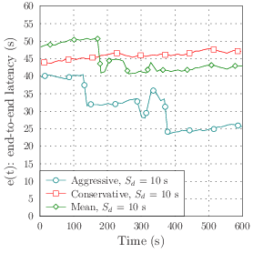
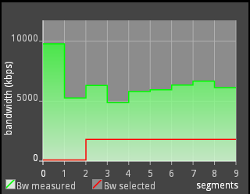
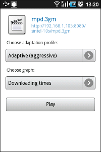
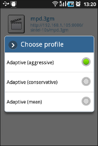
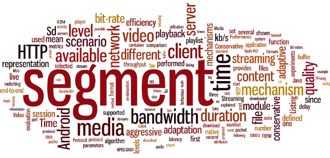

Master of Science Thesis
Academic supervisor: Gerald Q. Maguire Jr.
Industrial supervisor: Thorsten Lohmar
Royal Institute of Technology (KTH)
October 6, 2011
Adaptive streaming approaches over Hypertext Transfer Protocol (HTTP), such as Apple's HTTP Live streaming (HLS) and Microsoft's Live Smooth Streaming, have recently become very popular. This master's thesis project developed and evaluated several media rate adaptation algorithms optimized for mobile networks with a client running on Google's Android operating system. The deployed service supports HLS and the emerging ISO/IEC MPEG standard called Dynamic Adaptive Streaming over HTTP (MPEG-DASH).
Live media was the focus of the evaluation, since this content can not be cached in advance at the user's device, hence the quality of the user's experience will be affected by the currently available bandwidth which the user can utilize. Experiments were performed for multiple scenarios illustrating different network capabilities, especially various amounts of bandwidth available to the user.
This project has produced an implementation of HTTP-based adaptive streaming. This implementation follows the MPEG standard and enables robust and smooth playback of live video content via Google's Android devices. Results of the experiments have shown that the proposed adaptation mechanisms efficiently utilize the available bandwidth of the network. A clear conclusion of this thesis is that adaptive streaming will in fact enable substantial numbers of users to enjoy live media streaming to their devices.
Keywords: HTTP, live, video, streaming, MPEG-DASH, Android.
To Dad.
I am enormously grateful to Gerald Q. Maguire Jr. for his highly valuable comments and advice, which have contributed immensely to this master's thesis project. I would like to acknowledge Thorsten Lohmar for giving me the opportunity to realize this project at Ericsson in Aachen, Germany. Thorsten has provided me with thoughtful suggestions and guidance (which can be found throughout this thesis).
I am greatly thankful to my co-workers at Ericsson for their remarkable contributions and support: Thomas Johansson, Magued Sedra, Thorsten Dudda, Duong 'James' Quoc Trong, Peng Wang, Burcu Hanta, and Jairo Alfonso García Luna.
I would like to thank my friends from Toledo and my colleagues at the university, especially Urko Serrano Badiola, Sergio Gayoso Fernández, and Sergio Floriano Sánchez from the Royal Institute of Technology (KTH) and Federico Navarro Rodríguez and Ricardo Oňa Martínez-Albelda from the Technical University of Madrid (UPM) for sharing their magnificent experience, enthusiasm, and liveliness with me. Their friendship is gratefully acknowledged. Special thanks goes to Reyes Albo Sánchez-Bedoya for her innumerable advice during my studies.
Finally, I would like to express my infinite gratitude to my mother and my brother for their outstanding support in Spain and abroad. And Kathleen Streit, with love.
| 3GPP | 3rd Generation Partnership Project |
| AAC | Advanced Audio Coding |
| AVC | Advanced Video Coding |
| BP | Baseline Profile |
| CBP | Constrained Baseline Profile |
| CDN | Content Delivery Network |
| CODEC | COmpressor-DECompressor |
| CPU | Central Processing Unit |
| DF | Delivery Format |
| DOM | Document Object Model |
| DSS | Darwin Streaming Server |
| DTS | Decoding Time-Stamp |
| DVM | Dalvik Virtual Machine |
| GOP | Group Of Pictures |
| GUI | Graphical User Interface |
| HDS | Adobe's HTTP Dynamic Streaming |
| HLS | Apple's HTTP Live Streaming |
| HTML | Hypertext Markup Language |
| HTTP | HyperText Transfer Protocol |
| IEC | International Electrotechnical Commission |
| IETF | Internet Engineering Task Force |
| IPTV | Internet Protocol Television |
| ISO | International Organization for Standardization |
| ITU | International Telecommunication Union |
| JNI | Java Native Interface |
| JVM | Java Virtual Machine |
| LGPL | Lesser General Public License |
| LSS | Microsoft's Live Smooth Streaming |
| MEGACO | Media Gateway Control Protocol |
| MF | Manifest File |
| MIME | Multipurpose Internet Mail Extensions |
| MMUSIC | Multiparty Multimedia Session Control (Working Group) |
| MS IIS | Microsoft Internet Information Services |
| MPD | Media Presentation Description |
| MPEG | Moving Picture Experts Group |
| MPEG-DASH | MPEG Dynamic Adaptive Streaming over HTTP |
| M2TS | MPEG-2 Transport Stream |
| MVC | Multiview Video Coding |
| NAT | Network Address Translation |
| NTP | Network Time Protocol |
| OHA | Open Headset Alliance |
| OS | Operating System |
| PCM | Pulse-Code Modulation |
| PIFF | Protected Interoperable File Format |
| PTS | Presentation Time-Stamp |
| QSS | QuickTime Streaming Server |
| RAP | Random Access Point |
| RTMP | Real Time Messaging Protocol |
| RTP | Real-time Transport Protocol |
| RTCP | RTP Control Protocol |
| RTSP | Real Time Streaming Protocol |
| SAX | Java's Simple API for XML |
| SCCP | Skinny Call Control Protocol |
| SDK | Software Development Kit |
| SIP | Session Initiation Protocol |
| SNTP | Simple Network Time Protocol |
| SVC | Scalable Video Coding |
| TCP | Transmission Control Protocol |
| UDP | User Datagram Protocol |
| URI | Uniform Resource Identifier |
| URL | Universal Resource Locator |
| VCEG | Video Coding Experts Group |
| VLC | VideoLan Player |
| WAN | Wide Area Network |
| WAVE | Waveform Audio File Format |
| XML | Extensible Markup Language |
"The important thing is the diversity available on the Web."
- Tim Berners-Lee
Today streaming is a very popular technology by which multimedia content is delivered continuously from a server to end-users1. Streaming methods are constantly being improved since the network capabilities and usage scenarios are quite heterogeneous. The creation of techniques which automatically provide the best possible quality to consumers has become a important challenge [48]. By means of the widely used Hypertext Transfer Protocol (HTTP) [31] which is the de facto protocol of today's Internet, new streaming approaches have been developed [48, 55, 59, 69].
Recent studies [24] have shown the crescent diversity of end-user devices. Mobile phones have become immensely popular in the recent years, since they have been significantly enhanced, providing Internet-based services over wireless and broadband connections. Smartphones offer capabilities similar to modern computers, as they run more sophisticated operating systems than regular cellphones (allowing the installation of third-party applications). Figure 1.1 illustrates predictions for the next several years in terms of network traffic, suggesting that there will be a considerable increase mobile traffic (estimated to represent the 26.6% of the total network traffic in 2015).
Video data has unequivocally become the predominant type of content transferred by mobile applications. As shown in figure 1.2, video traffic is expected to grow exponentially in the next several years, prevailing (66%) over web (20.9%) and peer-to-peer (6.1%) traffic.

The immense variety of end-user devices operating under heterogeneous mobile networks leads to an interesting challenge: produce dynamic and automatized adaptation between producers and consumers, to deliver the best possible quality of content. Multiple constraints are present in the process of content delivery, such as network rate fluctuations or the client's own capabilities. For instance, end-users' devices can be limited by display resolution, maximum video bit-rate, or supported media formats. This master's thesis project focuses on portable devices and considers these limitations.
Figure 1.3 exemplifies the adaptation for similar clients which experience different limitations in the underlying communication network, hence the amount of data supplied per unit time to these clients differ. In this context, adaptive streaming [48] represents a family of techniques which addresses the problem of the difference in the data provided to different clients. By means of layered media content and adaptation mechanisms, end-users can perceive the most appropriate level of quality given their current constraints [23]. The most popular adaptive techniques will be introduced in the next chapter (section 2.3).
In the particular case of live video streaming (that is, non-previously recorded media) there is still a need to evaluate different adaptive solutions under a variety of conditions in wireless networks. Reusing existing protocols to create Content Delivery Networks (CDN) [25] would provide enormous advantages to those wishing to offer live streaming services, as they could take advantage of the optimizations that have been made to efficiently support these protocols and the large investment in the existing infrastructures.
Multiple operating systems (OSs) have been developed for smartphones. Android (explained in detail in section 2.10) is an open-sourced code based mobile OS developed by Google (Android's official logos are depicted in figure 1.4). Recent statistics [33] have shown that Android is the predominant mobile operating system (36% worldwide) followed by Symbian (27.4%), Apple's iOS (16.8%), RIM (12.9%), and Windows Mobile (3.6%) (figure 1.5a). Furthermore, Android is expected to be deployed in almost the 50% of smartphones sold in 2012, followed by Apple's iOS (figure 1.5b).
| (a) May 2011 | (b) 2012 estimation |
At the moment there are few adaptive streaming services for Google's Android, despite Apple Inc. having published and implemented a protocol known as HTTP Live Streaming (HLS) [59] already supported in Apple's mobile phones (the well-known family of iPhone devices). Furthermore, Apple-HLS is in the process of becoming an Internet Engineering Task Force (IETF) standard. Other parties, such as the ISO/IEC Moving Picture Experts Group (MPEG), have proposed a standard (that is still in development) for adaptive streaming over HTTP, known as Dynamic Adaptive Streaming over HTTP (DASH) [69].
This master's thesis project is motivated by the following goals:
In order to achieve these goals, the following tasks are defined in this project:
This project intends to evaluate the performance of different adaptive mechanisms under single end-user scenarios. Therefore, the scalability of the system (i.e., multiple users requesting media content) is not covered by this master's thesis project.
The network communication in this project is based on HTTP and uses TCP as the transport protocol, since it provides reliable byte stream delivery and congestion avoidance mechanisms. The advantages or disadvantages of using other transport protocols are not considered in this work.
Software engineers and Android developers interested in adaptive media content delivery could benefit from this master's thesis project. In this work, the most recent adaptive streaming standards (using HTTP as a delivery protocol) have been considered.
Chapter 2 presents the relevant background, introducing different streaming techniques and the adaptive protocols which have been recently published, such as Apple's HTTP Live Streaming, Microsoft's Live Smooth Streaming, Adobe's HTTP Dynamic Streaming, and MPEG Dynamic Adaptive Streaming over HTTP. In addition, the capabilities of the Android operating system are introduced, focusing on media formats, coders/decoders (CODECs), and adaptive protocols which are supported in Stagefright.
Chapter 3 summarizes the previous work which has been done in the area of the adaptive streaming, including simulations under heterogeneous network restrictions, performance of the different adaptive protocols, and proposals of adaptation mechanisms.
Chapter 4 explains on detail the proposed system architecture which has been designed and implemented during this master's thesis project.
Chapter 5 covers the overall evaluation performed for the system architecture explained in chapter 4. This chapter includes the definition of the metrics utilized, the input and output parameters, and the results achieved.
Chapter 6 presents a discussion of the results achieved in chapter 5 and the conclusions. Finally, the limitations of this master's thesis project are considered and presented as future work.
"Any sufficiently advanced technology is indistinguishable from magic."
- Arthur C. Clarke
There are three main methods to deliver multimedia: traditional streaming (section 2.1), progressive download (section 2.2), and adaptive streaming (section 2.3). Section 2.4 describes the evolution of adaptive streaming, using HTTP as a delivery protocol. The most popular implementations of this technique are explained in detail in the following subsections: Apple's HTTP Live Streaming in section 2.4.2, Microsoft's Live Smooth Streaming in section 2.4.3, Adobe's HTTP Dynamic Streaming in section 2.4.4, and MPEG Dynamic Adaptive Streaming over HTTP in section 2.4.5. Two different types of services can be provided: video on-demand or live streaming (section 2.9).
The most relevant video and audio CODECs are described in sections 2.5 and 2.6 respectively, whereas container formats are described in section 2.7. Android operating system capabilities are explained in section 2.10, mainly focusing on the media framework and supported CODECs.
Finally, a brief comparison of the different streaming approaches is presented at the end of the chapter (section 2.11).
Traditional streaming [48, p. 113-117] requires a stateful protocol which establishes a session between the service provider and client. In this technique, media is sent as a series of packets. The Real-Time Transport Protocol (RTP) together with the Real-Time Streaming Protocol (RTSP) are frequently used to implement such service.
The Real-Time Transport Protocol (RTP) [65] describes a packetization scheme for delivering video and audio streams over IP networks. It was developed by the audio video transport working group of the IETF in 1996.
RTP is an end-to-end, real-time protocol for unicast or multicast network services. Because RTP operates over UDP it is suitable for multicast distribution, while all protocols that are built on top of TCP can only be unicast. For this reason RTP is widely used for distributing media in the case of Internet Protocol Television (IPTV), as the Internet service provider can control the amount of multicast traffic that they allow in their network and they gain quite a lot from the scaling which multicast offers. For a streaming multimedia service RTP is usually used in conjunction with RTSP, with the audio and video transmitted as separate RTP streams.
The RTP specification describes two sub-protocols which are the data transfer protocol (RTP) and the RTP Control Protocol (RTCP) [65, section 6]:
Optionally RTP can be used with a session description protocol or a signalling protocol such as H.323, the Media Gateway Control Protocol (MEGACO), the Skinny Call Control Protocol (SCCP), or the Session Initiation Protocol (SIP).
RTP neither provides a mechanism to ensure timely delivery nor guarantees quality of service or in-order delivery. Additionally, there is no flow control provided by the protocol itself, rather flow control and congestion avoidance are up to the application to implement.
The Real-Time Streaming Protocol (RTSP) [66] is a session control protocol which provides an extensible framework to control delivery of real-time data. It was developed by the multiparty multimedia session control working group (MMUSIC) of the IETF in 1998. RTSP is useful for establishing and controlling media sessions between end points, but it is not responsible for the transmission of media data. Instead, RTSP relies on RTP-based delivery mechanisms. In contrast with HTTP2, RTSP is stateful and both client and server can issue requests. These requests can be performed in three different ways: (1) persistent connections used for several request/response transactions, (2) one connection per request/response transaction or (3) no connection.
Some popular RTSP implementations are Apple's QuickTime Streaming Server (QSS) (also its open-sourced version, Apple's Darwin Streaming Server (DSS)) and RealNetworks' Helix Universal Server.
Progressive download is a technique to transfer data between server and client which has become very popular and it is widely used on the Internet. Progressive download typically can be realized using a regular HTTP server. Users request multimedia content which is downloaded progressively into a local buffer. As soon as there is sufficient data the media starts to play. If the playback rate exceeds the download rate, then playback is delayed until more data is downloaded.
Progressive download has some disadvantages: (1) wasteful of bandwidth if the user decides to stop watching the video content, since data has been transferred and buffered that will not be played, (2) no bit-rate adaptation, since every client is considered equal in terms of available bandwidth and, (3) no support for live media sources.
Adaptive streaming [48, p. 141-155] is a technique which detects the user's available bandwidth and CPU capacity in order to adjust the quality of the video that is provided to the user, so as to offer the best quality that can be given to this user in their current circumstance. It requires an encoder to provide video at multiple bit rates (or that multiple encoders be used) and can be deployed within a CDN to provide improved scalability. As a result, users experience streaming media delivery with the highest possible quality.
Techniques to adapt the video source's bit-rate to variable bandwidth can be classified into three categories: transcoding (section 2.3.1), scalable encoding (section 2.3.2), and stream switching (section 2.3.3).
By means of transcoding it is possible to convert raw video content on the fly on the server's side. To match a specific bit-rate we transcode from one encoding to another. A block diagram of this technique is depicted in figure 2.1. The main advantage of this approach is the fine granularity that can be obtained, since streams can be transcoded to the user's available bandwidth.
However, there are some serious disadvantages that are worth pointing out. First of all, the high cost of transcoding, which requires adapting the raw video content several times for several requests for different quality. As a result scalability decreases since transcoding needs to be performed for every different client available bandwidth. Due to the computational requirements of a real-time transcoding system, the encoding process is required to be performed in appropriate servers, in order to be deployed in CDNs.
Using a scalable CODEC standard such as H.264/MPEG-4 AVC (described in detail in section 2.5.4), the picture resolution and the frame rate can be adapted without having to re encode the raw video content [42]. This approach tends to reduce processing load, but it is clearly limited to a set of scalable CODEC formats. A block diagram of this technique is depicted in figure 2.2.
Nevertheless, deployment into CDNs is complicated in this approach because specialized servers are required to implement the adaptation logic [23].
The stream switching approach encodes the raw video content at several different increasing bit-rates, generating R versions of the same content, known as video levels. As shown in figure 2.3, an algorithm must dynamically choose the video level which matches the user's available bandwidth. When changes in the available bandwidth occur, the algorithm simply switches to different levels to ensure continuous playback.
The main purpose of this method is to minimize processing costs, since no further processing is needed once all video levels are generated. In addition, this approach does not require a specific CODEC format to be implemented, that is, it is completely CODEC agnostic. In contrast, storage and transmission requirements must be considered because the same video content is encoded R times (but at different bit-rates). Note that the quality levels are not incremental, therefore only one substream has to be requested. The only disadvantage of this approach is the coarse granularity since there is only a discrete set of levels. Additionally, if there are no clients for a given rate there is no need to generate this level; however, this only costs storage space at the server(s) and not all servers need to store all levels of a stream.
Figure 2.4 illustrates the stream switching approach over time, assuming that all segments have the same duration and the switching operations are performed after each segment has been played (not partially). Segments at different video qualities are requested to be played in a sequence. The number of levels and the duration of the segments are flexible and become part of the system's design choices.
Recently a new solution for adaptive streaming has been designed, based on the stream switching technique (explained in section 2.3.3). It is an hybrid method which uses HTTP as a delivery protocol instead of defining a new protocol.
Video and audio sources are cut into short segments of the same length (typically several seconds). Optionally, segments can be cut along a video Group of Pictures (explained in section 2.5.1), thus every segment starts with a key frame, meaning that segments do not have past/future dependencies among them. Finally, all segments are encoded in the desired format and hosted on a HTTP server.
Clients request segments sequentially and download them using HTTP progressive download. Segments are played in order and since they are contiguous, the resulting overall playback is smooth. All adaptation logic is controlled by the client. This means that the client calculates the fetching time of each segment in order to switch-up or switch-down the bit-rate. A basic example is depicted in figure 2.5, where the feedback controller represents the switching logic applied on the client side. Thicker arrows correspond to transmission of an actual data segment.
HTTP is widely used in the Internet as a delivery protocol. Because HTTP is so widely used HTTP-based services avoid NAT and firewall issues. Because (1) the client initiated the TCP connection from behind the firewall or Network Address Translation (NAT) or (2) because holes for HTTP have been purposely opened through the firewall or NAT service. The NAT or firewall will allow the packets from the HTTP server to be delivered to the client over a TCP connection or SCTP association (for the rest of this thesis we will assume that TCP is used as the transport protocol for HTTP). Additionally because HTTP uses TCP it automatically gets in order reliable byte stream delivery and TCP provides extensive congestion avoidance mechanisms. HTTP-based services can use the existing HTTP servers and CDN infrastructures.
Finally, the streaming session is controlled entirely by the client, thus there is no need for negotiation with the HTTP server, as clients simply open TCP connections and choose an initial content bit-rate. Then clients switch among the offered streams depending on their available bandwidth.
In May 2009 Apple released a HTTP-based streaming media communication protocol (Apple-HLS) [10, 11, 29, 52, 59] to transmit bounded and unbounded streams of multimedia data. Apple-HLS is based on the Emblaze Network Media Streaming technology which was released in 1998. According to this specification, an overall stream is broken into a sequence of small HTTP-based file downloads, where users can select alternate streams encoded at different data rates. Because the HTTP clients request the files for downloading this method works through firewalls and proxy servers (unlike UDP-based protocols such as RTP which require ports to be opened in the firewall or require use of an application layer gateway).
Initially, users download an extended M3U playlist which contains several Uniform Resource Identifiers (URIs) [14] corresponding to media files, where each file must be a continuation of the encoded stream (unless it is the first one or there is a discontinuity tag which means that the overall stream is unbounded). Each individual media file must be formatted as an MPEG-2 transport stream [43] or a MPEG-2 audio elementary stream.
Listing 2.1 illustrates a simple example of an extended M3U playlist where the entire stream consists of three 10-seconds-long media files. Listing 2.1 provides a more complicated example, where there are different available bandwidths and each entry points to an extended M3U sub-playlist file (depicted in figure 2.6).
#EXTM3U #EXT-X-MEDIA-SEQUENCE:0 #EXT-X-TARGETDURATION:10 #EXTINF:10, http://www.example.com/segment1.ts #EXTINF:10, http://www.example.com/segment2.ts #EXTINF:10, http://www.example.com/segment3.ts #EXT-X-ENDLIST
#EXTM3U #EXT-X-STREAM-INF:PROGRAM-ID=1,BANDWIDTH=1280000 http://www.example.com/low.m3u8 #EXT-X-STREAM-INF:PROGRAM-ID=1,BANDWIDTH=2560000 http://www.example.com/mid.m3u8 #EXT-X-STREAM-INF:PROGRAM-ID=1,BANDWIDTH=7680000 http://www.example.com/hi.m3u8 #EXT-X-STREAM-INF:PROGRAM-ID=1,BANDWIDTH=65000,CODECS="mp4a.40.5" http://www.example.com/audio-only.m3u8
The overall process performed in an Apple-HLS architecture is shown in figure 2.7. From the server's side, the protocol operates as follows: (1) the media content is encoded at different bit-rates to produce streams which present the same content and duration (but with different quality), (2) each stream is divided into individual files (segments) with approximately equal duration, (3) a playlist file is created which contains an URI for each media file indicating its duration (the playlist can be accesed through an URL), and (4) further changes to the playlist file must be performed atomically.
From the client's side, the following actions take place: (1) selection of the media file which shall be played must be made and (2) periodically reload the playlist file (unless it is bounded). It is necessary to wait a period of time before attempting to reload the playlist. The initial amount of time to wait before re-loading the playlist is set as the duration of the last media file in the playlist. If the client reloads the playlist file and the playlist has not changed, then the client waits a period of time proportional to the duration of the segments before retrying: 0.5 times the duration for the first attempt, 1.5 times the duration for the second and 3.0 times the duration in further attempts.
In 2009, Microsoft Corporation released its approach [53, 55, 74] for adaptive streaming over HTTP. Microsoft's Live Smooth Streaming (LSS3) format specification is based on the ISO Base Media File Format and standardized as the Protected Interoperable File Format (PIFF) [19], whereas the manifest file is based on the Extensible Markup Language (XML) [18] (a simplified example is shown in listing 2.3).
Microsoft provides a Smooth Streaming demo4 which requires the Silverlight plug-in [54] to be installed. In this online application, the available bandwidth can be easily adjusted within a very simple user interface. A network usage graph is dynamically displayed as well as the adapted video output.
<?xml version="1.0" encoding="UTF-8"?>
<SmoothStreamingMedia MajorVersion="2" MinorVersion="0" Duration="2300000000"
TimeScale="10000000">
<Protection>
<ProtectionHeader SystemID="{9A04F079-9840-4286-AB92E65BE0885F95}">
<!-- Base 64 Encoded data omitted for clarity -->
</ProtectionHeader>
</Protection>
<StreamIndex Type = "video" Chunks = "115" QualityLevels = "2" MaxWidth = "720"
MaxHeight = "480" TimeScale="10000000" Name="video" Url ="QualityLevels({bitrate},
{CustomAttributes})/Fragments(video={start_time})">
<QualityLevel Index="0" Bitrate="1536000" FourCC="WVC1"
MaxWidth="720" MaxHeight="480" CodecPrivateData = "...">
<CustomAttributes>
<Attribute Name="Compatibility" Value="Desktop" />
</CustomAttributes>
</QualityLevel>
<QualityLevel Index="5" Bitrate="307200" FourCC="WVC1"
MaxWidth="720" MaxHeight="480" CodecPrivateData="...">
<CustomAttributes>
<Attribute Name="Compatibility" Value="Handheld" />
</CustomAttributes>
</QualityLevel>
<c t ="0" d="19680000" />
<c n ="1" t="19680000" d="8980000" />
</StreamIndex>
</SmoothStreamingMedia>
Adobe's HTTP dynamic streaming (HDS) approach enables on-demand and live streaming and it supports HTTP and Real Time Messaging Protocol (RTMP) [4]. It uses different format specifications for media files (Flash Video or F4V, based on the standard MPEG-4 Part 12) and manifests (Flash Media Manifest or F4M). In order to deploy Adobe's solution it is necessary to set up a Flash Media Streaming Server [37] which is a proprietary and commercial product. Additionally, users need to install Adobe's Flash Player.
MPEG Dynamic Adaptive Streaming over HTTP (MPEG-DASH) is a protocol presented by a joint working group [69] of Third Generation Partnership Project (3GPP) and MPEG. This protocol has recently been considered to become an ISO standard [1, 2]. MPEG-DASH defines a structure similar to Microsoft-LSS for adaptive streaming supporting on-demand, live, and time-shifting5 viewing, but it proposes changes in the file formats, defining a XML-based manifest file.
MPEG-DASH introduced the concept of media presentation. A media presentation is a collection of structured video/audio content:
A Media Presentation Description (MPD) schema is an XML-based file which contains the whole structure of a media presentation introduced above. A simplified version is depicted in figure 2.8, and listing 2.4 provides a concrete example.
<?xml version="1.0" encoding="UTF-8"?>
<MPD minBufferTime="PT10S">
<Period start="PT0S">
<Representation mimeType="video/3gpp; codecs=263, samr"
bandwidth="256000" id="256">
<SegmentInfo duration="PT10S" baseURL="rep1/">
<InitialisationSegmentURL sourceURL="seg-init.3gp"/>
<Url sourceURL="seg-1.3gp"/>
<Url sourceURL="seg-2.3gp"/>
<Url sourceURL="seg-3.3gp"/>
</SegmentInfo>
</Representation>
<Representation mimeType="video/3gpp; codecs=mp4v.20.9"
bandwidth="128000" id="128">
<SegmentInfo duration="PT10S" baseURL="rep2/">
<InitialisationSegmentURL sourceURL="seg-init.3gp"/>
<Url sourceURL="seg-1.3gp"/>
<Url sourceURL="seg-2.3gp"/>
<Url sourceURL="seg-3.3gp"/>
</SegmentInfo>
</Representation>
</Period>
</MPD>
The MPEG-DASH protocol specifies the syntax and semantics of the MPD, the format of segments, and the delivery protocol (HTTP). Fortunately, it permits flexible configurations to implement different types of streaming services. The following parameters can be selected flexibly: (1) the size and duration of the segments (these can be selected individually for each representation), (2) the number of representations and (3) the profile of each representation (bit-rate, CODECs, container format, etc).
Regarding the client's behaviour, it can flexibly: (1) decide when and how to download segments, (2) select appropriate representation, (3) switch representations and, (4) select the transport of the MPD file, which could also be retrieved by other means, rather than only through HTTP.
Figure 2.9 exemplifies the communication between server and client in a MPEG DASH streaming service. First the client retrieves the MPD file and afterwards it sequentially requests the media segments. In every period a representation level is selected, based on the fetching times and other parameters determined by the client.
This section describes a number of aspects of video coders and decoders that are relevant to a reader of this thesis.
Compressed video standards only encode full frame data for certain frames, known as key frames, intra-frames or simply I frames. The frames which follow a key frame, predicted frames or P frames, are encoded considering only the differences with the preceding frame, resulting in less data being needed to encode these subsequent frames. Videos whose frame information changes rapidly require more key frames than a slowly changing visual scene. An example of the relationship between several frames is shown in figure 2.10.
Bidirectional encoding is also possible by means of Bi predictive frames (B frames). B frames consider both previous and subsequent frame differences to achieve better compression.
A Group of Pictures (GOP) consists of one I frame followed by several P frames and optionally, B frames. Lowering the GOP size (key frame interval) can provide benefit: using more frequent key frames helps to reduce distortion when streaming in a lossy environment. However, a low GOP size increases the media file size since key frames contain more bits than predictive frames.
Decoding Time-stamp (DTS) is used to synchronize streams and control the rate at which frames are decoded. It is not essential to include a DTS in all frames, since it can be interpolated by the decoder. In contrast, the Presentation Time-stamp (PTS) indicates the exact moment when a video frame has to be presented at the decoder's output. PTS and DTS only differ when bidirectional coding is used (i.e., when B-frames are used).
H.263 [44] is a low-bit-rate video compression standard designed for videoconferencing, although is widely used in many other applications. It was developed by the ITU-T Video Coding Experts Group (VCEG) in 1996. H.263 has been supported in Flash video applications and widely used by Internet on-demand services such as YouTube or Vimeo.
H.263 bit-rates range from 24 kb/s to 64 kb/s. Video can be encoded and decoded to this format with the free LGPL-licensed libavcodec library (part of the FFmpeg project [13]).
H.264/MPEG-4 Part 10 [42] or Advanced Video Coding (AVC) is the successor of H.263 and other standards such as MPEG-2 and MPEG-4 Part 2. H.264 is one of the most commonly used formats for recording, compression, and distribution of high definition video. H.264 is one of the CODECs supported for Blu ray discs. H.264 was developed by the ITU T Video Coding Experts Group together with ISO/IEC MPEG in 2003. It is supported in Adobe's Flash Player and Microsoft's Silverlight. Therefore, multiple streaming Internet sources such as Vimeo, YouTube, and the Apple iTunes Store follow the H.264 standard.
H.264 specifies seventeen profiles which are oriented to multiple types of applications. The Constrained Baseline Profile (CBP) is the most basic one, followed by the Baseline Profile (BP) and the Main Profile (MP) in increasing order of complexity. CBP and BP are broadly used in mobile applications and videoconferencing. Additionally, these are the only H.264 profiles supported by Android's native media framework. Table 2.1 summarizes the major differences among these three profiles.
| Feature | CBP | BP | MP |
| Android support | Yes | Yes | No |
| Flexible macro-block ordering (FMO) | No | Yes | No |
| Arbitrary slice ordering (ASO) | No | Yes | No |
| Redundant slices (RS) | No | Yes | No |
| B-frames | No | No | Yes |
| CABAC entropy coding | No | No | Yes |
One of the most recent features added to the H.264 standard is Scalable Video Coding (SVC) [42, Annex G]. SVC enables the construction of bitstreams which contain sub bitstreams, all conforming the standard. In addition, Multiview Video Coding (MVC) [42, Annex H] offers an even more complex composition of bitstreams, allowing more than one view point for a video scene7.
VP8 is a video compression format originally created by On2, but eventually released by Google in 2010 after they purchased On2. VP8 was published with a BSD license, therefore it is considered to be an open alternative to H.264.
VP8 encoding and decoding can be performed by the libvpx library [70]. Moreover, the FFmpeg team released a ffvp8 decoder on July, 2010.
This section describes a number of aspects of audio coders and decoders that are relevant to a reader of this thesis.
MP3 [17, 36, 39] (published as MPEG-1 and MPEG-2 Audio Layer III) has undoubtedly become in the last decade the de facto audio CODEC due to its use in multiple media services and digital audio players. MP3 is a patented digital audio encoding format which reduces the amount of data required since it discards the less audible components to human hearing, i.e., it implements a lossy compression algorithm.
Advanced Audio Coding (AAC) [17] is an ISO/IEC standardized audio compression format which provides lossy compression encoding. It is supported in a extensive variety of devices. AAC is part of the MPEG-2 [40] and MPEG-4 [41] specifications. AAC was designed to be the successor of the MP3 format. A later extension defines the High-Efficiency Advanced Audio Coding (HE AAC).
Three default profiles are defined [40]: Low Complexity (LC), Main Profile (MP), and Scalable Sample Rate (SSR). In conjunction with the Perceptual Noise Substitution and 45 Audio Object Types [41], new profiles are defined, such as the High Efficiency AAC Profile (HE AAC and HE AAC v2) and the Scalable Audio Profile. The latter utilizes Long Term Prediction (LTP).
Vorbis [72] is a free and open audio CODEC meant to replace patented and restricted formats such as MP3 (section 2.6.1). Vorbis provides a lossy compression encoding over a wide range of bit-rates. It has been shown to perform similar to MP3 [22].
A container is a meta-format which wraps any kind of media data, resulting in a single file. Containers are used to interleave different data types, for instance video streams, subtitles, and even meta-data information. A vast variety of container formats has been developed, presenting different features and limitations. The most important multimedia containers are briefly introduced below.
Table 2.2 provides a comparison between the container formats explained above, in terms of supported audio and video CODECs.
| Format | H.263 | H.264 | MPEG-4 | VP8 | MP3 | AAC | HE-AAC | Vorbis |
| 3GP | Yes | Yes | Yes | No | No | Yes | Yes | No |
| MP4 | Yes | Yes | Yes | No | Yes | Yes | Yes | Yes |
| MPEG-TS | No | Yes | Yes | No | Yes | Yes | Yes | No |
| Ogg | No | No | No | No | No | No | No | Yes |
| Webm | No | No | No | Yes | No | No | No | Yes |
Video and audio content can be offered at multiple representations (quality levels) to adequate to different types of end-users. It is a well-known fact that end-users are affected by a wide variety of restrictions in terms of network capabilities, screen resolutions, and media formats supported, among other limitations. The more representations provided on the server's side, the better granularity characterizes the system, since a wider variety of alternative versions of media content is served. Nevertheless, the creation of multiple quality levels incurs a higher cost in terms of processing time, storage requirements, and CPU consumption. The following encoding parameters are especially relevant when defining a representation level:
Except for the GOP size, increasing any of these parameters leads to a higher quality audio or video output, consequently incurring a larger file size (requiring more bits to be transmitted).
There are two different ways to use streaming techniques. In the first one, video on-demand, users request media files which have been previously recorded and compressed and are stored on a server. Today this technique has become very popular, with YouTube being the most popular website offering on-demand streaming. The alternative is live streaming which enables an unbounded transmission where media is generated, compressed, and delivered on the fly. In the case of live streaming there may or not may be a concurrent recording (which could be transmitted later on-demand).
Both streaming techniques may offer the user basic video control functions such as pause, stop, and rewind. Additionally, for on-demand streaming there may be the possibility of issuing a fast-forward command. Note that fast forward is only possible when the media files are stored, thus the future content is known. Of course it is also possible for the system to implement the possibility of a fast-forward command if the user has paused the playback, but this will be limited to moving forward to the recently generated portion of the content.
Android is an operating system specially designed for mobile devices. It is mainly developed and supported by Google Inc., although other members of the Open Handset Alliance (OHA) have collaborated in its development and release. Table 2.3 reviews Android's version history.
| Version | Codename | Release date | Linux kernel version |
| 1.0 | None | 23 September 2008 | Unknown |
| 1.1 | None | 9 February 2009 | Unknown |
| 1.5 | Cupcake | 30 April 2009 | 2.6.27 |
| 1.6 | Donut | 15 September 2009 | 2.6.29 |
| 2.0/2.1 | Eclair | 26 October 2009 | 2.6.29 |
| 2.2 | Froyo | 20 May 2010 | 2.6.32 |
| 2.3 | Gingerbread | 6 December 2010 | 2.6.35 |
| 2.4 | Ice Cream Sandwich | Not released | Unknown |
| 3.0 | Honeycomb | 22 February 2011 | 2.6.36 |
| 3.2 | Honeycomb | 15 July 2011 | 2.6.36 |
Android is based on a modified version of the Linux kernel and its applications are normally developed in the Java programming language8. However, Android has not adopted the official Java Virtual Machine (JVM), meaning that Java Byte code can not be directly executed. Instead, applications run on the Dalvik Virtual Machine (DVM), a JVM-based virtual machine specifically designed for Android. DVM is optimized for mobile devices, which generally have CPU performance and memory limitations. In addition, DVM makes more efficient use of battery power.
Applications are usually released via the Android Market, Google's official online store. Nevertheless, publication of the applications is not restricted, allowing installation from any other source. Figure 2.11 shows the current distribution of Android versions based on the operating system of the devices that have recently accessed the Android Market. As shown, Android's newer versions (the 3.x branch) are only slowly being adopted, for example Honeycomb still represents less than 1% of the overall of Android devices, while Froyo the predominate version (running on almost 60% of the devices that access the Android Market).
Android supports several multimedia formats and CODECs [28, p. 195-250], including H.263 and H.264. Table 2.4 and Table 2.5 summarize respectively the video and audio CODECs and container formats that are supported. For media playback, only the decoding capabilities are relevant (encoding is typically used for recording purposes).
| CODEC | Encoding | Decoding | Container format |
| H.263 | Yes | Yes | 3GPP (.3gp) and MPEG-4 (.mp4) |
| H.264 | No (supported from 3.0 onwards) | Yes | 3GPP (.3gp) and MPEG-4 (.mp4). Only Baseline Profile (BP) |
| MPEG-4 | No | Yes | 3GPP (.3gp) |
| VP8 | No | No (supported from 2.3.3 onwards) | WebM (.webm) |
| CODEC | Encoding | Decoding | Container format |
| AAC LC/LTP | Yes | Yes | 3GPP (.3gp) and MPEG-4 (.mp4, .m4a) |
| HE-AAC v1 | No | Yes | 3GPP (.3gp) and MPEG-4 (.mp4, .m4a) |
| HE-AAC v2 | No | Yes | 3GPP (.3gp) and MPEG-4 (.mp4, .m4a) |
| MP3 | No | Yes | MP3 (.mp3). Mono and stereo 8-320 kb/s constant (CBR) or variable bit-rate (VBR) |
| Vorbis | No | Yes | Ogg (.ogg) |
| PCM/WAVE | No | Yes | WAVE (.wav) |
Android's media framework natively supports streaming over RTP and RTSP. Unfortunately, the majority of Android versions do not support any of the adaptive protocols over HTTP mentioned earlier. Only Honeycomb features Apple-HLS natively. During the development of this master's thesis project there was no media player for Android supporting the recent MPEG DASH standard. This section explores the existing compatibilities with regard to Apple-HLS, Microsoft-LSS, and Adobe-HDS.
At the moment there are a few implementations of Apple-HLS for Android:
Microsoft's adaptive streaming approach for Android is not available yet officially, although Microsoft has indicated that they soon plan to support it through a Silverlight11 browser plug-in soon. However, the open-source implementation of Silverlight for Unix-based operating systems (Moonlight), has been experimentally ported to Android12.
The Adobe Flash 10.1 plug-in for browsers is available13 for Android 2.2, although it is only compatible with a limited variety of Android devices14. The plug-in supports RTP and RTSP streaming, HTML progressive download, Adobe's Flash Streaming, and Adobe-HDS.
Table 2.6 summarizes the main features of the most relevant HTTP-based adaptive streaming solutions: Microsoft-LSS, Apple-HLS, and MPEG-DASH.
| Feature | Microsoft-LSS | Apple-HLS | MPEG-DASH |
| Specification | Proprietary | Proprietary | Standard |
| Video on demand | Yes | Yes | Yes |
| Live | Yes | Yes | Yes |
| Delivery protocol | HTTP | HTTP | HTTP |
| Origin server | MS IIS | HTTP | HTTP |
| Media container | MP4 | MPEG-TS | 3GP or MP4 |
| Supported video CODECs | Agnostic | H.264 | Agnostic |
| Recommended segment duration (s) | 2 | 10 | Flexible |
| End-to-end latency (s) (variable, depending on the size of segments) | > 1.5 | 30 | > 2 |
| File type on server | Contiguous | Fragmented | Both |
In order to implement a functional live streaming service for Android, all the limitations of the operating system must be considered, as well as the possibility of deploying a compatible server. We explicitly considered the following:
"If you wish to make an apple pie from scratch, you must first invent the universe."
- Carl Sagan
Extensive work has been carried out in the area of adaptive streaming over HTTP (i.e., using HTTP as a delivery protocol). Multiple rate adaptation mechanisms have been proposed and experiments have been performed under different network conditions. An extensive evaluation of adaptive streaming, including live sources under heterogeneous network rates, has been carried out in [26], although using RTP and RTSP as delivery protocols.
In [62] the media segmentation procedure has been utilized to provide a HTTP streaming server with dynamic advertisement splicing. Unfortunately, the evaluation only included experiments under homogeneous bit-rate conditions, therefore no rate-adaptation was performed in either server or client.
The fundamental capabilities of the 3GPP's MPEG-DASH standard have been demonstrated in [69], pointing out the most significant properties of the media presentation descriptor (MPD or simply manifest file). Long-session experiments for both on-demand and live video content were performed, featuring advertisement insertion. An experimental comparison between Apple's HLS and MPEG-DASH over an HSPA network has been carried out in [67], although only on-demand content was considered.
The benefits of the Scalable Video Coding (SVC) (an extension of H.264/MPEG-4 AVC [42, Annex G]) in a MPEG-DASH environment are demonstrated in [64]. Media content is divided into SVC layers and time intervals. By means of this H.264 extension, storage requirements and congestion at the origin server are claimed to be reduced. SVC in conjunction with Multiple Descriptor Coding (MDC) were tested over a peer-to-peer (P2P) video on-demand system in [3]. An initial adaptation algorithm is suggested, based on the client's display resolution, bandwidth, and processing power. During playback, a progressive quality adaptation is carried out, monitoring the buffer state and analyzing the change of download throughput during the buffering process.
In [57] a MPEG-DASH prototype is presented as a plug-in for the VideoLan player 1.2.0 (VLC). A novel rate adaptation algorithm for MPEG-DASH was proposed in [49], using a smoothed throughput measurement (based on the segment fetch time) as the fundamental metric. Therefore, the algorithm can be implemented at the application layer since it does not consider TCP's round-trip time (RTT). Upon detecting that the media bit-rate does not match the current end-to-end network capacity, an mechanism for conservative up-switching and aggressive down-switching of representations is invoked.
A pre-fetching approach for user-generated content video is presented in [45]. It predicts a set of videos which are likely to be watched in the near future and downloads them before they are requested. The benefits of the pre-fetching scheme are compared with a traditional caching scheme are demonstrated in a number of different network scenarios.
An intensive experiment on rate-adaptation mechanisms of adaptive streaming is presented in [5]. Three different players (OSMF, Microsoft Smooth Streaming, and Netflix) are evaluated in a broad variety of scenarios (both on-demand and live) with both persistent and short-term changes in the network's available bandwidth and shared bottleneck links. J. Yao, et al. [73] carried out an empirical evaluation of HTTP adaptive streaming under vehicular mobility.
An experimental analysis of HTTP-based request-response streams compared to classical TCP streaming is presented in [46]. It is claimed that the HTTP streams are able to scale with the available bandwidth by increasing the chunk size or the number of concurrent streams.
A Quality Adaptation Controller (QAC) for live adaptive video streaming which employs feedback control theory is proposed in [23]. Experiments with greedy TCP connections are performed over the Akamai High Definition Video Server (AHDVS), considering bandwidth variations and different streams which share a network bottleneck.
Evensen, et. al. [27] present a client scheduler that distributes requests for video over multiple heterogeneous interfaces simultaneously. Segments are divided into smaller sub-segments. They experimented with on-demand and quasi-live streaming. Evaluations have been performed over three different types of streaming: on-demand (assuming infinite buffer, only limited by network bandwidth), live streaming with buffering (the whole video is not available when streaming starts), and live streaming without buffering. The last scenario considers liveness as the most important metric, thus segments are skipped if the stream lags too far behind the broadcast.
An elaborated comparison between Apple's HLS on iPhone and RTP on Android 1.6 is presented in [61]. In particular, the impact of packet delay and packet loss are evaluated with respect to the start-up delay and playback, as well as TCP traffic fairness.
From previous work in the area of adaptive streaming we can deduce that there is still a lack of evaluation on mobile devices, especially those using the most recent standards (such as MPEG-DASH, introduced in section 2.4.5) for the particular case of live content sources. This master's thesis aims to fill the gap by deploying a full service for mobile devices, providing an extensive evaluation (over a set of heterogeneous network scenarios similar to the experiments carried out in [5]) with different adaptation mechanisms (also described as feedback controllers). These mechanisms are substantially based on the algorithms proposed in [23, 49, 67], although some enhancements have been made, specifically: (1) a mechanism to discard segments upon abrupt reduction of the network's available bit-rate, and (2) a procedure to lower the selected media quality on the client's side in case of a buffer underflow.
"Simplicity is the prerequisite for reliability"
- Edsger W. Dijkstra
This chapter explains each of the elements of the overall system (depicted in figure 4.1). The most important entities are the server and the client which are explained in section 4.3 and section 4.4, respectively. Communication between these two entities flows over HTTP. The advantages of using HTTP were described in chapter 2. Synchronization of the client and server are described in section 4.2.
Two types of servers have been deployed depending on the nature of content: one of the servers provides video on-demand (section 4.3.1) and the other offers live video (section 4.3.2). As, explained in chapter 2, the media content needs to be encoded and segmented to satisfy the specifications of the MPEG-DASH standard and Apple-HLS (see section 2.4.5 and section 2.4.2 respectively). This procedure is represented by the content preparation module, which is characterized in section 4.1.
In reality, network traffic conditions are susceptible to change. A network emulator is described in section 4.5. This network emulator enables controlled experiments to be performed with different bit-rates, various delays, and different packet loss rates.
Figure 4.2 depicts the modules which multiplex the input media content into different quality streams followed by a segmentation procedure. The transcoder part and the selection of the R representations are explained in section 4.1.1, followed by the segmentation, combiner, and indexing parts in sections 4.1.2 and 4.1.3, respectively. The overall output will be pushed to the HTTP servers as is explained in sections 4.3.1 and 4.3.2.
The transcoder module is responsible for generating different quality levels, as described in section 2.8. This module receives a media file as input (containing a video and audio stream, at least one of them is required to be present), then produces from the audio/video stream several files encoded at different bit-rates. Audio and video are combined using the MP4 container format. This module is implemented as a BASH script and relies on the FFmpeg [13] and x264 [71] libraries15. Listing 4.1 and listing 4.2 illustrate the use of the ffmpeg command and the x264 parameters applied, in order to satisfy the H.264 Baseline Profile (introduced in the CODECs section).
ffmpeg -i $INPUT -y -r 25 -s 480x320 -aspect 3:2 -g 25 \ -acodec libfaac -ab $ABITRATE -ac $CHANNELS -ar $SAMPLE_RATE \ -vcodec libx264 $X264_PARAMS -b $VBITRATE -bufsize $VBITRATE -maxrate $VBITRATE \ -async 10 -threads 0 -f $FILE_FORMAT -t $CLIP_DURATION $OUTPUT
X264_PARAMS=-coder 0 -flags +loop+mv4 -cmp 256 -subq 7 -trellis 1 -refs 5 -bf 0 -wpredp 0 -partitions +parti4x4+parti8x8+partp4x4+partp8x8+partb8x8 -flags2 -wpred-dct8x8 -me_range 16 -g 25 -keyint_min 25 -sc_threshold 40 -i_qfactor 0.71 -qmin 10 -qmax 51 -qdiff
The segmenter module receives a set of media files encoded at different bit-rates and splits them into several segments (with similar features to those described in [51]). In addition, an initialization segment is also generated as an output. The initialization segment provides the meta-data16 which describes the media content, without including any media data. Furthermore, it supplies the timing information (specifically the DTS and PTS, as defined in section 2.5.2) of every segment.
This module reads the different parts or boxes of the container format and separates the file into several pieces of approximately the same duration (this duration is passed in as an input parameter). It attempts GOP alignment between all the input files, that is, segments always start with a key-frame17 and the breaking point is the same for all representations.
Several tools can be used to analyze the structure of a media file. In particular, MP4box18 is able to list all the elements of a container format in a NHML file (an XML-based type for multiplexing purposes), indicating which samples are a Random Access Points (RAPs) and which are not. Listing 4.3 shows a sample NHML output from MP4box.
<?xml version="1.0" encoding="UTF-8" ?> <NHNTStream version="1.0" timeScale="25" streamType="4" objectTypeIndication="33" specificInfoFile="..." width="480" height="320" trackID="1" baseMediaFile="..." > <NHNTSample DTS="0" dataLength="1082" isRAP="yes" /> <NHNTSample DTS="1" dataLength="11" /> ... <NHNTSample DTS="25" dataLength="413" isRAP="yes" /> ... <NHNTSample DTS="4644" dataLength="413" isRAP="yes" /> ... </NHNTStream>
Sequentially, the combiner module produces segments that can be played on Stagefright. To enable this it transforms all the chunks into self-contained files taking the header information from the initialization segment. Since the live stream will consist of several self-contained segments, there is no need to modify the DTS or PTS.
An index of all the segments generated in the previous steps must be pushed to the HTTP servers. This module inspects the segments that have been produced and generates an ordered list (MPD) which satisfies the MPEG-DASH standard guidelines. Two different types of MPDs are created:
In the particular case of live video content, it is useful if both server and client have the same sense of time. Synchronization in this context means that provider and consumer sides communicate with an external time server to set their clocks to the same accurate time base. Compared to a non-synchronized scheme, clients do not need to make so many queries to the server (HTTP requests) since the clients knows in advance when new content will be available.
Synchronization is achieved by means of the Simple Network Time Protocol (SNTP) [56], which is based on the Network Time Protocol (NTP). Fortunately, many NTP public servers are freely available on the Internet. The NTP Pool project19 has been selected for this purpose because it provides a pool of free NTP servers operating on a reasonable-use basis. Indeed, the implementation of this prototype follows the recommendations of [56, sec. 10] to perform a fair use of the time servers, thus periodic requests are never performed more frequently than every 30 seconds. Figure 4.3a depicts the relation between client, server, and the NTP pool.
Figure 4.4 depicts the header of a NTP packet. There are three fields needed for the simplest synchronization: time-stamp of client's request (Originate Timestamp field), time-stamp of the client's request arrival at the time server (Receive Timestamp field), and a time-stamp of when the server's response was transmitted (Transmit Timestamp). The rest of header fields (such as Poll, Stratum, and Precision) and are not considered here for simplicity (for further details see [56]).
The synchronization procedure (shown in figure 43b) is performed in this prototype as follows:
The offset (Toffset) (between the machine's local time and the NTP time) and round-trip-time (RTT) (path delay between the client and NTP server) can be determined as:
| Toffset = |
(t1 - t0 ) + (t2 - t3 )
|
(4.1) |
| RTT = (t3 - t0 ) - (t2 - t1 ) (4.2) |
Both HTTP client and HTTP server will add their respective offset to their local time (note that offset can be a negative quantity). In particular, the HTTP client's request time becomes t0 + Toffset. For the HTTP client's operations that need an absolute time reference, the offset is simply added to the result of a Java method System.currentTimeMillis() invocation.
Two types of HTTP servers have been deployed in this architecture. The first server is suitable only for video on-demand, whereas the second server serves content from live sources. Each of these servers is briefly explained in the following sections.
An Apache [47] HTTP server acts as video on-demand server. Apache has been selected because it is robust and easy to deploy on Gnu/Linux machines. The purpose of this server in our architecture is simple: this HTTP server provides a list of manifest files which contain URLs for the segments generated for every representation. Table 4.1 lists the Multipurpose Internet Mail Extensions (MIME) [32] types that needed to be added to the Apache configuration. These types are added to the Apache's configuration file (httpd.conf).
| Type | MIME type | File extension |
| DASH manifest | video/vnd.3gpp.mpd | .3gm |
| DASH video segment | audio/vnd.3gpp.segment | .3gs |
| Apple-HLS playlist | application/x-mpegURL | .m3u8 |
| Apple-HLS video segment | video/MP2T | .ts |
We have decided to use Twisted [30] is an event-driven networking engine written in Python [35], licensed under the MIT license20, because it supports a wide variety of protocols and it contains multiple resources to deploy a simple web server. The live server is based on a content-loop server developed previously at Ericsson GmbH. The content-loop server has been modified to satisfy the requirements of the system architecture proposed in this chapter.
HTTP responses are generated by an abstract class which extends Twisted's Resource type. A simplification of this class is shown in listing 4.4.
class DashResource(resource.Resource):
def returnSuccess(self, request, content, contentType):
... // Set HTTP headers
request.setHeader('Content-Length', "%d" % len(content))
request.setResponseCode(http.OK)
request.write(content)
request.finish()
def returnFailed(self, request, error):
request.setResponseCode(404)
request.write(error)
request.finish()
The live server receives all media segments and manifest files that have previously been generated (as explained in section 4.1) and prepares a live source. In our prototype, live content is provided by looping several clips and numbering all segments by means of the mathematical modulo function to produce an unbounded stream of content. Segments requested with a index greater than the available segments are automatically pointed to an existing segments modulo the total number of segments, thus providing an infinite loop of video content. Segments are numbered with an arbitrary length integer. The behaviour of the server is summarized as follows:
In this architecture, an Android application acts as the client. Android cellphones have sufficient capabilities to provide video playback and perform communication over HTTP.
The client developed in this master's thesis project has the following features:
The adaptation mechanisms proposed in this master's thesis project follow three requirements:
If any of these requirements is not satisfied, this indicate an erroneous use of the available bandwidth. If the first requirement is not met, this indicates that the choice of representation level selected was overestimated. As a result, the time it will take to download the next segment will be longer than the segment's own duration, leading to playback interruptions if the representation level is not reduced. Not fulfilling the second requirement indicates that the representation level has been underestimated. In this case, the user of this client will not experience the best possible quality - however, they will be able to watch/listen to the content at less than the highest possible quality. The third requirement involves a design choice: when switching events may occur. In our implementation, the adaptation mechanism is always invoked right after segments are downloaded (buffered). Therefore, all the proposed mechanisms are equally fast, but provide different criteria for the appropriate quality level.
Three adaptation mechanisms has been proposed: aggressive adaptation, conservative adaptation, and mean adaptation. Details of these three mechanisms are explained in the following subsections.
The aggressive mechanism is defined in algorithm 1. This mechanism has the following characteristics:
The aggressive mechanism determines the optimal quality level considering only the last throughput measurement t. The selected quality level is increased when the last throughput measurement is greater than the current representation's bit-rate. Otherwise, the quality level is decreased.
Data: Last throughput measurement t, playlist P, ordered array of representations r with size |r| = R, current representation index rcurr begin if |P| = 0 then Switch-down to minimum: rcurr ← 0 else if t > r[rcurr] then while r[rcurr+1] < t and rcurr < R – 1 do Switch-up one level: rcurr ← rcurr + 1 end else while r[rcurr – 1] > t and rcurr > 0 do Switch-down one level: rcurr ← rcurr – 1 end end end end
This mechanism is referred to as aggressive because it provides a rapid change in behaviour in its response to bandwidth fluctuations. Nonetheless, problems may arise with this algorithm due to short-term bit-rate peaks. Since it will try to switch level, the increased bandwidth might not be available for all of the next segment's download, hence the client will not have time to download the new segment. The expected advantages and disadvantages of the aggressive mechanism are:
The conservative mechanism (specified in algorithm 2) is based on the aggressive mechanism (described in section 4.4.2.1). However, it enhances the selection of the quality level by adding a sensitivity parameter which is applied to the last measured throughput t. Consequently, the client becomes less sensitive to the available network bit-rate, resulting in a more conservative selection of the representation level. In this mechanisms, a sensitivity of the 70% is applied (note that a sensitivity of 100% will produce the same behaviour as the aggressive mechanism). As a result, the expected advantages and disadvantages of the conservative mechanism are:
Data: Last throughput measurement t, playlist P, ordered array of representations r with size |r| = R, current representation index rcurr begin Sensitivity ← 0.7 if |P| = 0 then Switch-down to minimum: rcurr ← 0 else t' ← t × Sensitivity if t' > r[rcurr] then while r[rcurr+1] < t' and rcurr < R – 1 do Switch-up one level: rcurr ← rcurr + 1 end else while r[rcurr – 1] > t' and rcurr > 0 do Switch-down one level: rcurr ← rcurr – 1 end end end end
The mean mechanism is built upon the aggressive mechanism (described in section 4.4.2.1). Using this mechanism the optimal quality level decision is based upon the arithmetic mean21 of the last three throughput measurements (see algorithm 3). The overall behaviour is similar to the adaptive mechanism proposed in [67] where the last five measurements were considered. In the mean mechanism the throughput average is calculated based on the last three measures (t1, t2, and t3) In addition, a high sensitivity parameter is applied to the throughput average. The expected advantages and disadvantages of the mean mechanism are:
Data: Last 3 throughput measurements t1, t2, and t3, playlist P, ordered array of representations r with size |r| = R, current representation index rcurr begin Sensitivity ← 0.95 tmean ← (t1 + t2 + t3)/3 if |P| = 0 then Switch-down to minimum: rcurr ← 0 else tmean' ← tmean × Sensitivity if tmean' > r[rcurr] then while r[rcurr+1] < tmean' and rcurr < R - 1 do Switch-up one level: rcurr ← rcurr + 1 end else while r[rcurr-1] > tmean' and rcurr > 0 do Switch-down one level: rcurr ← rcurr - 1 end end end end
Figure 4.6 illustrates the modules which constitute the client's application. A dashed line separates the prototype from the cellphone's external resources, such as the available memory (external storage) and the user interface. The user interface represents the user's interaction with the device's buttons and (where available) touch-screen.
The client's functionality can be summarized as follows. The player module (described in section 4.4.4) starts the application and manages the video controller and graphical resources, in particular, the Android surface where the video is displayed. The parser module (described in section 4.4.5) is launched and it transforms the index file or manifest file into several representation playlists, each one corresponding to a determined quality level. If the parsing procedure is successfull, this module periodically checks for manifest updates as a background task.
Next the segmeter-downloader module (described in section 4.4.6) starts to request the media segments over HTTP using persistent connections. A query is sent to the rate-adaptation module (described in section 4.4.7) after each download. The rate-adaptation module is responsible for selecting the most appropriate quality level depending on the network conditions. Consequently, the transcoder module performs a media conversion when necessary, as was explained in section 4.4.1.
Segments successfully downloaded into the buffer are added to a primary playlist (described in section 4.4.6), which enumerates the received pieces of content. Changes in the playlist will be constantly monitored by the player module.
The timer module (described in section 4.4.9) calculates the timing of all the events which take place in the system. This information is essential for the evaluation described in the next chapter.
In Android terminology, an activity is an application component that provides a graphical interface, listening to the user's interaction. Activities are analogous to windows in typical computer applications as they provide graphical components (such as text or buttons) and can be opened or closed in a specific order.
Activities are controlled by several listeners: onCreate() is the most important method, as this method is invoked at the beginning of the activity. The remaining listeners (onResume(), onStop(), onPause(), onRestart(), and onDestroy()) have been adapted to satisfy the desired behaviour of the application22. In particular these methods:
Three activities have been designed in this prototype, see figure 4.8. The first activity, depicted on the left of the figure, displays a list of manifest files. The user can easily add, modify and remove entries using the GUI components (Android's contextMenu). When an element of the list is selected, the second activity is started. This step is only used for our evaluation, since it selects the proposed adaptive algorithms (these algorithms will be introduced in section 4.4.7). The last activity handles the actual media playback, displaying both the video and dynamic plots on the screen. A demonstration of the GUI can be found in the appendix A.
All activities have to be described in the AndroidManifest.xml file, as shown in the simplified in listing 4.5. Lines 5-8 indicate the first activity to be launched when the application is started (ContentSelection activity). In addition, the Android OS permissions required for the application need to be specified. In our case these permissions are:
<?xml version="1.0" encoding="utf-8"?>
<manifest xmlns:android="http://schemas.android.com/apk/res/android">
<application>
<activity android:name="ContentSelection">
<intent-filter>
<action android:name="android.intent.action.MAIN"/>
<category android:name="android.intent.category.LAUNCHER"/>
</intent-filter>
</activity>
<activity android:name="RateAlgorithmSelection"/>
<activity android:name="Player"/>
</application>
<uses-permission android:name="android.permission.WRITE_EXTERNAL_STORAGE"/>
<uses-permission android:name="android.permission.INTERNET"/>
</manifest>
The player module is the essential and main component of the application. It manages the playback of the media segments, displaying the video stream on the screen. Figure 4.9 depicts the set of actions performed in this module. Initially the module creates two background tasks with the following purposes: (1) periodically parse the manifest file (to be performed by the parsing module, explained in detail in section 4.4.5) and (2) download the media fragments (performed by the segment-downloader module, described in section 4.4.6).
The player module examines a generated playlist of buffered segments (which is regularly updated by the segment-downloader module). The player continues this processing until the main activity is closed.
A video surface is the main element of a video player. This surface is represented as a SurfaceView element in the Android framework. The media files will be played (i.e., displayed) on this surface. The process of binding a video surface with to instance of a Android MediaPlayer object takes place in four steps (as depicted in figure 4.10):
public void surfaceCreated(SurfaceHolder holder) {
mediaPlayer.setDisplay(holder); // SurfaceHolder binding
new Thread(new Runnable() { // Start segment handling as background task
@Override
public void run() {
Looper.prepare();
playHandler = new Handler();
playHandler.post(nextSegment);
Looper.loop();
}
}).start();
}
Different techniques were studied in order to load different video segments concurrently. By means of creating more than one instance of the MediaPlayer class, it may be possible to prepare several video segments at the same time. However, this approach is not suitable because of the unique binding condition, i.e., only one instance of MediaPlayer can be attached to a surfaceHolder (as depicted in figure 4.11). The Java method setDisplay() can only be invoked once, and further calls are ignored. This makes it necessary to utilize another surface video for every MediaPlayer. Unfortunately, since SurfaceView is a heavy object and it consumes a significant amount of resources, this approach is not efficient. Therefore, in our implementation several instances of MediaPlayer are created but only one instance is attached to a SurfaceView.
The listeners of the Player activity and the MediaPlayer class constitute the essential elements of this implementation. Listing 4.7 shows the most significant lines of the onCreate() Java method, here the surfaceHolder and MediaPlayer objects are instantiated.
surfaceHolder = surfaceView.getHolder(); // Create surfaceHolder and set listeners surfaceHolder.addCallback(this); surfaceHolder.setType(SurfaceHolder.SURFACE_TYPE_PUSH_BUFFERS); mediaPlayer = new MediaPlayer(); // Create media player and set listeners mediaPlayer.setOnPreparedListener(this); mediaPlayer.setOnCompletionListener(this); mediaPlayer.setOnErrorListener(this); mediaPlayer.setScreenOnWhilePlaying(true);
Listing 4.8 shows the handleNextSegment() method. It is launched as a background task once the surfaceView resource is ready. This task manages the playback of media segments, by checking whether there are entries in the playlist. When there are new entries, the next appropriate media segment is load asynchronously, as shown in listing 4.9. There is one restriction imposed by the Android specification (as depicted in the state diagram of figure 4.12): the MediaPlayer object used by the activity must be restarted for every segment, since setDataSource() can only be invoked after reset().
private void handleNextSegment() {
while (!playList.isReadyToPlay()) {} // Waiting for segments on playlist
... // Update UI elements (loading wheel)
... //Update segment pointers
lastSegmentPath = currentSegmentPath;
currentSegmentPath = playList.getNext(); // Read next entry
if (currentSegmentPath != null) {
setNextDataSource(currentSegmentPath); // Start segment load procedure
} else {
if (buffer.get404Errors() > MAX_404ERRORS)
closeMedia("Many segments missing");
}
}
private void setNextDataSource(String nextFilePath) {
try {
mediaPlayer.reset();
mediaPlayer.setDataSource(nextFilePath);
mediaPlayer.prepareAsync(); // Prepare segment asynchronously
} catch (Exception e) {
playHandler.post(nextSegment); // If errors: continue with next segment
}
}
Once segments are successfully loaded, the onPrepared() listener is triggered, as illustrated in listing 4.10. The player proceeds to play the segment as soon as possible, subsequently launching (according to the DELETION_TIMEOUT parameter23) a background cleaning task. This task removes old entries in the representation lists and deletes already played segments.
public void onPrepared(MediaPlayer mp) {
if (playedSegments == 0) Timer.startPlayback(); // Timing info
mp.start();
new Thread(new Runnable() { // Update dynamic plots on screen in a new thread
@Override
public void run() {
cleaningHandler.postDelayed(new Runnable() {
@Override
public void run() {
... // Perform RepresentationLists cleaning
... // Remove played segments from external storage
}
}, DELETION_TIMEOUT);
}
}).start();
}
A completion listener (onCompletion()) is invoked when segments have reached their end. Consequently, the next segment is immediately prepared in order to minimize interruptions in the media during playback. The code to do this is shown in listing 4.11.
public void onCompletion(MediaPlayer mp) {
... // Logging
playedSegments++;
playHandler.post(nextSegment); // Launch background task
... // Update UI’s buffer bar
}
Upon termination of the activity, background tasks and resources are released (using the method closeMedia() as shown in the simplified listing 4.12).
public void closeMedia() {
if (mediaPlayer != null) mediaPlayer.release();
if (buffer != null) buffer.stop(); // Stop buffering background task
if (parser != null){ // Stop manifest updater task
...
if (isLive())
if (mpdHandler != null) mpdHandler.getLooper().quit();
}
finish(); // Terminate activity
}
This module parses a file which follows either the MPEG-DASH standard or Apple's m3u8 extended playlists. After completion, a list of available segments is generated for every representation, ordered by bandwidth (a basic example was illustrated in table 4.2). In addition, two parsing modes are defined:
The player is responsible for calling the parser module at the start of the player's execution. If the manifest file is available and it satisfies the supported standards implemented in this prototype, an initial set of parameters is defined: number of representations, number of segments, type of content (on-demand or live) and segment duration, among other parameters (a full list of the supported parameters is given in the following section).
|
|
|
In the case of live content, this module is executed quasi-periodically (assuming that the segments are the same length). The manifest file is parsed again and the lists of segments are updated. The parsing procedure is aborted if the manifest file has not changed24.
Java's Simple API for XML (SAX) and the Document Object Model (DOM) are two widely used parsing methodologies. In this design, SAX has been selected as the parsing technology for this module25. SAX demonstrates better capabilities for the type of files handled in the overall application. Advantages of SAX compared to DOM are:
In summary, SAX provides a faster method to parse XML files than DOM. Since these files basically consist of a set of parameters and list of segments, it can be read sequentially and there is no need for the client to modify any field. In fact, the server is responsible for providing new updates of the manifest file and is the only entity that updates this file.
Listing 4.13 shows the Java constructor, which makes use of the SAXParser, SAXParserFactory, and XMLReader classes included in the Android framework. The main method is parse() (see listing 4.14) which will be invoked just once for on-demand services and periodically for live content. A XMLHandler private class (listing 4.15) reads all XML-tags and their attributes to generate Java objects and lists of segments for different representations. Tables 4.3 to 4.8 present the attributes of the MPD [1] supported in this implementation.
public DASHParser(String manifestURL, Mode mode) throws IOException,
UnvalidManifestException {
... // Init SAX variables
try {
SAXParser = factory.newSAXParser();
XMLReader = SAXParser.getXMLReader();
userXMLHandler = new UserXMLHandler();
XMLReader.setContentHandler(userXMLHandler);
} catch (...) {} // Exception handling
initTempDirectory(); // Create temporal directory to save segments
}
public void parse() throws IOException, SAXException,
UnvalidManifestException {
XMLReader.parse(parsingUrl);
if (!isValidManifest())
throw new UnvalidManifestException("Manifest is not valid");
sortSegmentLists();
this.segmentLists = getSegmentLists();
}
private class UserXMLHandler extends DefaultHandler {
... // Override methods: startDocument(), endDocument() and endElement()
@Override
public void startElement(String uri, String localName, String qName,
Attributes attributes) throws SAXException {
/* Detect all supported tags and transform to Java objects */
createMPD(attributes); // MPD tag
createProgramInformation(attributes); //ProgramInformation tag
createPeriod(attributes); // Period tag
createSegmentInfoDefault(attributes); // SegmentInfo tag
createRepresentation(attributes); // Representation tag
createSegmentInfo(attributes); // SegmentInfo tag
createURL(attributes); // URL tag
createUrlTemplate(attributes); // URLTemplate tag
}
}
| Attribute | Definition |
| Type | Optional, on-demand by default. Type of the media presentation. On-demand and live types are defined |
| Base URL | Optional. Base URL on MPD level |
| Minimum update period | Mandatory. Minimum period the MPD is updated on the server. |
| Minimum buffering time | Mandatory. Minimum amount of initially buffered media that is needed to ensure smooth playback. |
| Media presentation duration | Optional. Duration of the entire media presentation. |
| Availability start time | Mandatory for live, optional for on-demand. Start time of the first period of the media presentation in UTC format. |
| Available shifting time | Optional. Duration of the time shifting buffer that is available for a Live presentation. If it is present for on-demand services, the client should ignore this attribute. |
| Attribute | Definition |
| Start | Optional. Accurate start time of the period relative to the availability start time of the media Presentation. |
| Identifier | Optional. Unique identifier for this period within the media Presentation. |
| Default segment information | Optional. Default Segment information about Segment durations and, optionally, URL construction. |
| Attribute | Definition |
| Identifier | Mandatory. Unique identifier for this representation within the period. |
| Bandwidth | Mandatory. Minimum bandwidth of a hypothetical constant bit-rate channel in bits per second over which the representation can be delivered such that a client, after buffering for exactly the minimum buffering time can be assured of having enough data for continuous playback. |
| MIME type | Mandatory. MIME type of the initialization segment, if present. If not, it provides the MIME type of the first media segment. This MIME type includes the CODEC parameters for all media types, including profile and level information where applicable. |
| Attribute | Definition |
| Base URL | Optional. Base URL on representation level. |
| Segment duration | Mandatory if duration is not specified on period level. Constant approximate segment duration. All segments within this segment information element have the same duration unless it is the last segment within the period, which could be significantly shorter. If this attribute is not present, the value of this attribute is derived to be equal to the value of the duration attribute on period level, if present. |
| Start index | Optional, 1 by default. Index of the first accessible media segment in this representation. |
| URL template | Optional. The presence of this element specifies that a template construction process for media segments is applied. The element must include attributes to generate a segment list for the representation associated with this element. |
| Attribute | Definition |
| Source URL | Optional. URL of the media segment. If not present, then any base URL is mapped to the sourceURL attribute and the range attribute should be present. |
| Attribute | Definition |
| Source URL | Optional. The source string providing the template. If the template is not present, the id attribute on representation level provides the necessary information to construct the template. |
| End index | Optional. Index of the last accessible media segment in this representation. |
The lexical representation of all duration attributes follows the W3C ISO 8601 Date and Time Formats syntax [15, section 3.2.6] "P nY nM nD T nHnM nS", where nY represents the number of years, nM the number of months, nD the number of days, T is the date/time separator, nH the number of hours, nM the number of minutes and nS the number of seconds (decimal digits supported).
Additionally, extended M3U playlists can be parsed (see listing 4.16). Table 4.9 and table 4.10 show the tags of the Apple's extended M3U playlists [59] which are supported in the prototype.
| Tag | Definition |
| #EXTM3U | Mandatory. All playlists files must start with this tag. If not, the client must not attempt to use the playlist. |
| #EXT-X-VERSION | Optional. It specifies the protocol version. The client checks if it supports the version. if not, it must not attempt to use the playlist file. |
| #EXT-X-TARGETDURATION | Mandatory. It specifies the maximum media file duration. The EXTINF duration of each media file in the playlist file must be less than or equal to the target duration. |
| #EXT-X-MEDIA-SEQUENCE | Optional. It indicates the sequence number of the first URI that appears in a playlist file. This tag can only appear once. |
| #EXTINF | Conditionally mandatory. It is a marker which describes the media file identified by the URI that follows it. Each media file URI must be preceded by this tag. |
| #EXT-X-STREAM-INF | Optional. It indicates that the next URI in the playlist file identifies another playlist file (sub-playlist). |
| Attribute | Definition |
| BANDWIDTH | Mandatory. Decimal integer of bits per second. It must be an upper bound of the overall bit-rate of each media file, including container overhead. |
| PROGRAM-ID | Optional. Decimal integer that uniquely identifies a particular presentation within the scope of the playlist file. A playlist file may contain multiple EXT-X-STREAM-INF tags with the same PROGRAM-ID to identify different encodings of the same presentation. These variant playlists could contain additional EXT-X- STREAM-INF tags. |
| CODECS | Optional. Quoted string containing a comma-separated list of formats, where each format specifies a media sample type that is present in a media file in the playlist file. Valid format identifiers are those in the ISO File Format Name Space [34]. |
| RESOLUTION | Optional. Decimal value describing the approximate encoded horizontal and vertical resolution of video within the stream. |
public void parse() throws MalformedURLException, IOException,
InvalidPlaylistException, UnmodifiedMPDException {
String filename = downloadManifest(new URL(playlist));
FileReader reader = new FileReader(filename);
Scanner scanner = new Scanner(reader);
...
while (scanner.hasNextLine()) {
... // Analysis of each extended tag
}
sortSegmentLists();
}
The segment-downloader module is responsible for opening HTTP connections to fetch the available segments. It sends HTTP requests and waits for the corresponding reply, checking the HTTP headers and response codes in the reply. Once the connection is opened, the received byte stream is transferred to a buffer to store the media files (in this prototype, the cellphone's MicroSD card – a so-called external storage device – acts as the buffer26). Although the Android system natively supports HTTP progressive streaming, it is necessary to pre-download the segments in order to avoid pauses once playback has started. Immediately after a new segment is stored in the buffer, this module performs two actions:
Video fragments that are successfully downloaded are added to a playlist, as proposed in [69]. This list is represented as a table with two columns: estimated (relative) playback time and filename (path) to the media segments. A simple example is shown in table 4.11. The timing column is calculated based upon the information provided by the parsing module.
| Time | Segment URL |
| 0.00 | /media/sdcard/tmp/...segment1.mp4 |
| 10.00 | /media/sdcard/tmp/...segment2.mp4 |
| 20.00 | /media/sdcard/tmp/...segment3.mp4 |
This module also provides a segment re-download mechanism. Segments whose download time increases greatly, must be immediately discarded. This is one of the indicators of an inadequate representation level and the rate-adaptation module must be notified, (the information that will be shared between the segment-downloader and the rate-adaptation modules is depicted in figure 4.13). Equation 4.3 indicates the maximum download time or timeout (Ttimeout) where Sd represents the duration of the segment. In this prototype, the timeout value is fixed at 80% of the segment duration, which provides enough tolerance to enable a segment to be downloaded and potentially be downloaded a second time at a lower bit-rate.
A client's throughput metric (t, measured in bits per second) has been defined to inform the rate-adaptation module right after every segment is downloaded of the recently experienced HTTP connection throughput. Throughput at the client's side is calculated as:
Where Si is the size in bits of the segment i and Ti is the time it took to download it, measured in seconds.
The segment-downloader module is implemented as a background task (i.e., a secondary thread executing as an infinite loop), as shown in the listing 4.17. First, a call to fillBuffer() in the rateLogic (rate adaptation module) determines whether a new segment should be downloaded to the buffer. If so, the destination URL will be requested by means of the getNextSegment() method. Two situations could arise: (1) there is already a new segment available to download or (2) there is not, in which case the loop continues in case of live content or ends in case of video on-demand. Note that this module only downloads segments given a URL. The decisions about the appropriate representation level are managed in the rate-adaptation module.
public void run() {
while (running) {
try {
if (rateLogic.fillBuffer()) {
URL url = rateLogic.getNextSegment();
if (url != null) {
try {
downloadSegment(url); // Fetch next segment
rateLogic.addEstimatedTime(); // Notify rate-adaptation module
storedSegments++;
playList.isReadyToPlay(); // Update playlist status
bufferBarUpdate();
} catch (DownloadAgainException e) { ...
} finally {
rateLogic.adapt(); // Perform adaptation in the rate-adaptation module
}
} else {
if (playList.isLive()) continue; // Infinite loop for live content
else break;
}
}
} catch (...) {} // Catch exceptions
}
playList.setEnd();
}
If there is a new segment available, then this module calls the downloadSegment() method. The first step is the initialization of the HTTP connection, which is shown in listing 4.18. The code must check that the HTTP responses have correct headers and a valid response code. If there is an error, then the code attempts for a limited number of times (modeled as MAX_ATTEMPS and set to five in this implementation) to download the segment again - until a valid HTTP code is returned.
while (attempt < MAX_ATTEMPTS) {
connection = (HttpURLConnection) url.openConnection();
connection.setConnectTimeout(TIMEOUT);
connection.setDoInput(true);
connection.connect();
int responseCode = connection.getResponseCode(); // Obtain HTTP response code
if (responseCode == HttpURLConnection.HTTP_OK)
break;
if (responseCode == HttpURLConnection.HTTP_NOT_FOUND)
throw new IOException("HTTP 404 not found");
attempt++;
connection.disconnect();
}
if (connection.getResponseCode() != HttpURLConnection.HTTP_OK)
return; // Exit if HTTP response code is not HTTP-200
... // Read the Content-Length header field
connection = (HttpURLConnection) url.openConnection();
Listing 4.19 illustrates the management of the flow of bytes. The byte stream obtained from the HTTP connection (produced by an instance of BufferedInputStream) is redirected to the external storage (instance of FileOutputStream). In order to provide maximum timing accuracy, timing measurements are performed at the beginning of the byte transfers. A timeout (as explained above) is defined in this implementation as MAX_ALLOWED_TIME and is used as the criteria of when to discard and re-download segments that could not be retrieved in time.
private void downloadSegment(URL url) throws ... {
String filename = tempPath + getFileName(url.toString());
if (!new File(filename).exists()) {
... // Init HTTP connection
bis = new BufferedInputStream(connection.getInputStream(), BYTE_BLOCK);
fos = new FileOutputStream(filename);
... // Start timer
while ((count = bis.read(data, 0, data.length)) != -1) {
... // Stop downloading if player is closed
if (Timer.getByteFlowTime() > MAX_ALLOWED_TIME) {
if (rateLogic.shouldDownloadAgain()) {
... // Calculate availBW and notify Logic module
throw new DownloadAgainException(...);
}
}
fos.write(data, 0, count);
bytes += count;
}
... // Close streams
try {
availBW = (int) ((totalBytes * 8 * 1000) / Timer.endByteFlow());
rateLogic.setAvailBandwidth(availBW);
} catch (ArithmeticException e){}
if (Player.isM3U8) // Perform MPEG-TS conversion if necessary
filename = Transcoder.convertToMp4(filename);
try {
new FakePlayer(filename); // Test downloaded segment in FakePlayer
} catch (DownloadAgainException e) {
rateLogic.retryOnError();
throw new DownloadAgainException(e.getMessage());
}
playList.add(filename); // Add segment to the playlist
}
}
Once the media file has been correctly downloaded, the segment-downloader module provides a new bandwidth measurement (equation 4.4) to the rate-adaptation module. Notification is also performed when discarding segments, which forces the selection of the appropriate quality level before fetching another piece of content. Finally, the segment's path is added to the playlist, which is implemented as a Java List<MediaSegment>, where MediaSegment objects consist of a estimated playback time-stamp and a file path.
This module can be considered the core of the adaptation logic. It receives information about the estimated playback time and the measured bandwidth from the segment-downloader module (as explained in section 4.4.6). In addition, the rate-adaptation module has access to the different playlists generated by the parsing module (see section 4.4.5). Based upon all of this information the rate-adaptation module runs the adaptation algorithm to decide which representation level is the optimal one. In this module, the aggressive, conservative, and mean algorithm (proposed in section 4.4.2) have been implemented.
In terms of Java programming, the rate-adaptation module is a submodule of the segment-downloader, since they execute in the same thread. The algorithms proposed in the previous sections rely on actions that increase or decrease the representation level. Hence, four Java methods (listing 4.20) have been developed to provide this functionality. switchUp() and switchDown() receive a parameter indicating the number of level switching steps. The implementation of the switch-up method is shown in listing 4.21.
private void switchUp(int levels); private void switchDown(int levels); private void switchMaxUp(); private void switchMinDown();
private void switchUp(int levels) {
while (levels > 0 && !isMaxBandwidth) {
try {
/* Try to access the next representation list */
segmentLists.get(currentId + levels);
/* Success, update the pointers */
currentId += levels;
currentList = segmentLists.get(currentId);
setBandwidths();
break;
} catch (IndexOutOfBoundsException e) {}
levels--;
}
}
The process of adaptation is performed after the download of every segment. The segment-downloader module calls the adapt() method within the rate-adaptation module. Listing 4.22 shows a simplified version of the Java code, only the adaptive (aggressive) algorithm is shown in this example. The remainder of the implementation follows the algorithms.
public void adapt() {
switch (logic) { // Apply rate algorithm according to adaptive profile
case PROGRESSIVE:
... // Null adaptation, testing purposes
case ADAPTIVE_CONSERVATIVE:
... // Implementation of the conservative adaptive algorithm
case ADAPTIVE_CONSERVATIVE:
if (playList.isEmpty()) {
switchMinDown();
} else {
int throughput = (int) (measuredThroughput * SENSITIVITY);
if (throughput > currentBW) {
while (nextBW < throughput && !isMaxBandwidth)
switchUp(1);
} else {
do {
switchDown(1);
} while (prevBW > throughput && !isMinBandwidth);
}
}
break;
case ADAPTIVE_MEAN:
... // Implementation of the mean adaptive algorithm
}
... // Prevent re-download a segment at the same quality twice
}
Media segments are fetched and allocated in the Android device's external storage, as was previously explained in section 4.4.6. In case of the MPEG-DASH standard, media formats produced by the HTTP servers are fully supported in Stagefright, making the segments suitable for playback. However, the Apple-HLS specification contemplated only MPEG-TS as a media container format. Unfortunately, this container format is not natively supported in Stagefright, hence a transcoder is utilized to perform the necessary conversion.
The transcoder module solves the compatibility problem by providing additional processing for Apple's HLS media content. Fortunately, most Apple-HLS sources contains streams encoded with H.264 (baseline profile) and AAC, thus the transcoder only needs to change the MPEG-TS container into one of the Android's supported formats (listed in table 2.4). Figure 4.14 illustrates the necessary transformation for compatibility. Since this procedure consumes a considerable amount of CPU cycles27, it must be performed within a bounded period of time to avoid interrupting the playback (see experiments in section 5.7). As an absolute maximum upperbound, the overall execution of the operations performed in the buffering and transcoder modules may never take longer that the previous segment's duration, as expressed in equation 4.5.
Assuming that all segments are of the same length, equation 4.5 can be expressed as:
| Tdownload + Tconversion < Tduration (4.6) |
This module makes use of the FFmpeg audio and video libraries. Since they are written in the C and C++ programming languages, a binding is needed to invoke the proper functions from Android's Java standard code. This binding is achieved by means of the Java Native Interface (JNI). Fortunately a Native Development Kit (NDK)28 is offered at the official Android developers site, which provides several tools to link Java code to pieces of native code. The basic Android application model does not change, since the NDK works in combination with the Android's SDK (introduced in section 2.10). The integration of the FFmpeg libraries can be found in the appendix C.
Listing 4.23 describes how exceptions can be thrown from the native code to the Java activities to notify them of an exception in the native code.
int jniThrowException(JNIEnv* env, const char* className, const char* msg) {
jclass exceptionClass = env->FindClass(className);
if (exceptionClass == NULL)
return -1;
env->ThrowNew(exceptionClass, msg)
return 0;
}
A set of native functions have been defined in a Java FFmpeg class: the most important of these are shown in listing 4.24. These methods provide a basic interface to prepare the conversion. The first two functions, native_avcodec_register_all() and native_av_register_all(), initialize all the media formats and CODECs that have been enabled when FFmpeg was compiled. Input and output file names are set with native_av_setInputFile() and native_av_setOutputFile(), respectively. The output CODECs are set by calling the native_av_setVideoCodec() and the native_av_setAudioCodec() functions. In the FFmpeg notation, media streams can remain unaltered if copy is indicated as the video and audio CODECs, in this case changes will be made to the container format, which is the main purpose of this module in our current prototype.
/* Codec initialization */ private native void native_avcodec_register_all(); private native void native_av_register_all(); private native void native_av_init() throws RuntimeException; /* Input parameters */ private native FFmpegAVFormatContext native_av_setInputFile(String filePath) throws IOException; private native FFmpegAVFormatContext native_av_setOutputFile(String filePath) throws IOException; private native void native_av_setVideoCodec(String codec); private native void native_av_setAudioCodec(String codec); private native void native_av_parse_options(String[] args) throws RuntimeException; /* Main conversion method */ private native void native_av_convert() throws RuntimeException; /* Release resources */ private native int native_av_release(int code);
The initialization procedure is specified in listing 4.25, where the input options are allocated. Input parameters are parsed in the FFmpeg_parseOptions() native function, which has been simplified in listing 4.26.
static void FFmpeg_init(JNIEnv *env, jobject obj) {
sObject = (*env)->NewGlobalRef(env, obj);
jclass clazz = (*env)->GetObjectClass(env, obj);
int i=0;
for(i=0; i<AVMEDIA_TYPE_NB; i++){
avcodec_opts[i]= avcodec_alloc_context2(i);
}
avformat_opts = avformat_alloc_context();
sws_opts = sws_getContext(16, 16, 0, 16, 16, 0, sws_flags, NULL, NULL, NULL);
}
static void FFmpeg_parseOptions(JNIEnv *env, jobject obj, jobjectArray args) {
... // Init variables
if (args != NULL) {
argc = (*env)->GetArrayLength(env, args);
argv = (char **) malloc(sizeof(char *) * argc);
for(i=0;i<argc;i++) {
jstring str = (jstring)(*env)->GetObjectArrayElement(env, args, i);
argv[i] = (char *)(*env)->GetStringUTFChars(env, str, NULL);
}
}
parse_options(argc, argv, options, opt_output_file); // Parse options
/* Check input and output files */
if(nb_output_files <= 0 && nb_input_files == 0)
jniThrowException(env, ...);
if (nb_output_files <= 0)
jniThrowException(env, ...);
if (nb_input_files == 0)
jniThrowException(env, ...);
}
Finally, listing 4.27 illustrates FFmpeg_transcode(), where the fundamental FFmpeg function av_transcode() is invoked. Calling this function implies that all input parameters have been properly set without throwing any JniException.
static void FFmpeg_transcode(JNIEnv *env, jobject obj, jlong outputFile,
jlong inputFile) {
...
if (av_transcode(output_files, nb_output_files, input_files, nb_input_files,
stream_maps, nb_stream_maps) < 0)
jniThrowException(env, ...);
}
The Java method convertTo() (simplified in listing 4.28) wraps all the native functions previously explained, providing a simple shortcut to utilize the FFmpeg libraries from any Android activity. This procedure is depicted in figure 4.15. The whole operation can be simplified into three simple steps:
private static String convertTo(String inputFile, String extension)
throws FFmpegException, RuntimeException, IOException {
ffmpeg = new FFmpeg(); // Prepare conversion parameters
ffmpeg.setVideoCodec("copy"); // Only conversion of the container format
ffmpeg.setAudioCodec("copy");
ffmpeg.init(inputFile, outputFile);
ffmpeg.convert(); // Start format conversion
return outputFile;
}
The timer module provides accurate timing information about multiple events that take place in the client application. The following measurements are essential for our evaluation of the system:
The timer module is synchronized with a pool of NTP servers, as introduced in section 4.2. Table 4.12 summarizes the most significant SNTP parameters used in this implementation.
| NTP server | NTP port | Version | Mode | NTP timeout (s) | NTP update (s) |
| europe.pool.ntp.org | 123 | 3 | 3 | 15 | 30 |
A sntpClient class has been created to request timing information from an NTP server. A NTP datagram is sent to the server and port specified in table 4.12, indicating the current system time in the OriginateTimeStamp header field. Calculation of the offset time between the cellphone's internal clock and the NTP server's clock is shown in listing 4.29.
private static boolean requestNTPTime() {
if (ntpClient.requestTime(NTP_SERVER, NTP_TIMEOUT)) {
/* Calculate offset */
offsetNTP = ntpClient.getNtpTime() + SystemClock.elapsedRealtime()
- ntpClient.getNtpTimeReference()
- System.currentTimeMillis();
return true;
}
return false;
}
The first NTP request is sent upon initialization of this module. Consequently, a background task is started to make future requests to the NTP servers (see listing 4.30). This module offers two types of timing metrics:
public static void init() {
time = System.currentTimeMillis(); // System’s local clock
... // Request NTP time and calculate offset
... // Set all counters to zero
new Thread(new Runnable() { // Init NTP update in a background task
@Override
public void run() {
Looper.prepare();
ntpHandler = new Handler();
ntpHandler.postDelayed(NTPUpdate, NTP_UPDATE);
Looper.loop();
}
}).start();
}
A prototype of the media player presented in section 4.4 has been developed to provide network adaptation. Rate adaptation implies that the client reacts in a reasonable time to changes in the network conditions.
In order to evaluate the capabilities of the application (as will be done in chapter 5), a network simulator was interposed between the client and the server to control the characteristics of the HTTP traffic. This emulator must do at least the following: (1) perform bandwidth limitation (bidirectional, and optionally, unidirectional), (2) produce packet loss with a given probability or error rate, and (3) induce appropriate packet delays.
Dummynet [20, 21] has been selected as the evaluation tool since it satisfies the above requirements and it is easily integrated in the system29. Dummynet's is briefly explained in the following section, along with the functions that will be used during the evaluation (see the network scenarios defined in section 5.1.7). There are multiple alternative emulation tools available, but they present some integration difficulties:
Dummynet is the network emulator deployed for our evaluation. For simplicity, Dummynet was installed on the same Gnu/Linux machine as the HTTP server. Dummynet intercepts the packets within the protocol stack, as shown in figure 4.16. These packets are selected according to different rules, which have been previously specified by means of the ipfw shell command.
The intercepted packets are passed through one or more queues and pipes (as depicted in figure 4.17) which emulate propagation delays, limitations of available bandwidth, and packet loss. Pipes behave as fixed-bandwidth channels and queues can be weight-assigned.
Network rules can be easily defined. These rules establish a networking profile. Several profiles were proposed for the experiments and measurements described in the next chapter. For example, listing 4.31 shows how to define a simple pipe rule that restricts the available bandwidth to 2 Mb/s and introduces a packet delay of 1000 ms. Listing 4.32 shows a more complex example, where both outcoming and incoming traffic have different bit-rates, packet delay, and packet loss specifications.
# Define bandwidth and delay of the emulated link ipfw pipe 1 config bw 2Mbit/s delay 1000ms # Pass all traffic through the emulator ipfw add pipe 1 ip from any to any
# Define pipes for incoming and outcoming network traffic ipfw add pipe 3 out ipfw add pipe 4 in # Pipes configuration ipfw pipe 3 config bw 512Kbit/s delay 32ms plr 0.01 ipfw pipe 4 config bw 256Kbit/s delay 100ms plr 0.05
"Premature optimization is the root of all evil."
- Donald Knuth
In this chapter a number of potential experiments are proposed to evaluate the performance of the adaptive mechanisms presented in section 4.4.7.
The evaluation environment is introduced in section 5.1, including the segmentation schemas (defined in section 5.1.3), the input/output characterization (section 5.1.5), the metrics proposed (section 5.1.6), and the network scenarios emulated (section 5.1.7). Results of the experiments are described in section 5.2 to section 5.7.
Figure 5.1 illustrates the evaluation environment. Three components of the architecture have been provided with input parameters:
Additionally, a real-world scenario has been included in this evaluation. This scenario exploits the fact that several TV channels following the Apple-HLS standard are freely available on the Internet (see section 5.7).
Table 5.1 summarizes the specifications of the devices utilized on the experiments. The same machine (a standalone netbook) acts as HTTP server and prepares the content (as explained in section 4.1 and section 4.3). The client is a mid-range smartphone running Android 2.2.1.
| Client | Server | |
| Name | Samsung Galaxy Ace S5830 | Acer Aspire One D150 |
| CPU | 800 MHz ARM 11 processor | 1.60 GHz Intel Atom N270 |
| Memory | RAM: 256 MB Internal: 158 MB External: 2GB microSD | RAM: 1 GB DDR3 @ 667 MHz Storage: 160 GB SATA HDD |
| OS | Android v2.2.1 (Froyo) | Kubuntu Gnu/Linux 2.6.36 |
| Network | 2G: GSM 850/900/1800/1900 3G: HSDPA 900/2100 WLAN: Wi-Fi 802.11 b/g/n | WLAN: Wi-Fi 802.11 b/g/n |
| Display | TFT HVGA touchscreen. 480 × 320 px | - |
The 3D animation film Sintel [16] has been selected for this evaluation, since is free-distributable under the Creative Commons Attribution (CC-A) license. Sintel is a 15-minute movie produced by the Blender Foundation and created entirely with open source software. It was released at the Netherlands Film Festival in September 2010.
The media content which is pushed to the HTTP servers can be offered in multiple ways. Our evaluation focus on two essential aspects: the number of quality levels (R) and the duration of the segments (Sd). Table 5.2 defines the different segmentation schemas used in our evaluation.
Each schema provides a different media segment duration Sd, from 5 s to 15 s. The reference time has been set to 10 s, as this duration was recommended by Zambelli [74] (see also table 2.6). For simplicity, a homogeneous but sufficient [49, 50] number of representations has been provided in all schemas. Selection of the different levels of quality is explained in section 5.1.4.
Table 5.3 illustrates the Android's official encoding recommendations for low and high quality media content. For the sake of simplicity, in this evaluation the frame rate, audio channels, sampling rate, GOP size34, and resolution are set to typical values (as shown in table 5.4), whereas video and audio bit-rates are part of our design choices. Both audio and video bit-rates are increased in every media representation that we have conducted experiments with.
| Parameter | Low quality video | High quality video |
| Video resolution (px) | 176 × 144 | 480 × 360 |
| Frame rate (fps) | 12 | 30 |
| Video bit-rate (kb/s) | 56 | 500 |
| Audio CODEC | AAC-LC | AAC-LC |
| Audio channels | 1 (mono) | 2 (stereo) |
| Audio bit-rate (kb/s) | 24 | 128 |
| Container format | CODECs | Frame rate (fps) | GOP size | Resolution (px) |
| MP4 (.mp4) | H.264 BP + AAC | 25 | 25 | 480 × 320 |
Table 5.5 defines the quality levels which will be provided to the HTTP servers, with increasing bit-rates from 80 kb/s to 2 Mb/s. In particular, these representations have been selected to supply a higher density of levels for lower bit-rates, since this prototype is intended for mobile networks that may have more limited bandwidth. Therefore, the difference in rates between levels is not uniform. This selection of media bit-rates leads to potentially large changes in quality levels by the rate adaptation algorithms.
| Level (ri) | 1 | 2 | 3 | 4 | 5 | 6 | 7 | 8 | 9 | 10 |
| Video bit-rate (kb/s) | 56 | 70 | 100 | 150 | 200 | 400 | 700 | 900 | 1400 | 1900 |
| Audio bit-rate (kb/s) | 24 | 24 | 44 | 64 | 94 | 94 | 94 | 94 | 94 | 94 |
| Audio channels | 1 | 1 | 1 | 1 | 2 | 2 | 2 | 2 | 2 | 2 |
| Sampling rate (kHz) | 22.05 | 22.05 | 22.05 | 22.05 | 44.1 | 44.1 | 44.1 | 44.1 | 44.1 | 44.1 |
| Avg. bit-rate (kb/s) | 80 | 100 | 150 | 200 | 300 | 500 | 800 | 1000 | 1500 | 2000 |
As an example of the video streams, figure 5.2 shows a set of frames from the same clip encoded at different video/audio bit-rates. For simplicity, only four quality levels are represented: 80 kb/s (first representation), 150 kb/s, 800 kb/s, and 2000 kb/s (last representation). Higher rates assign more bits per image, resulting in a better quality.
 | |
| (a) 80 kb/s | (b) 150 kb/s |
| (c) 800 kb/s | (d) 2000 kb/s |
Table 5.6 and table 5.7 summarize, respectively, the input and output parameters that have been considered in our evaluation.
| Notation | Unit | Definition |
| T | s | Total session time |
| Tshift | s | Available shifting time on server |
| Tmin-buf | s | Minimum buffering time, specified on server |
| Sd | s | Segment duration |
| S | segments | Total number of segments in session. Calculated as S = T / Sd |
| Ttimeout | s | Segment's downloading timeout. Ttimeout = Sd × 80% |
| R | levels | Total number of representations offered on the server |
| ri | b/s | Ordered representation levels by bit-rates, where 1 < i <
R. The last representation, rR represents the highest quality level offered by the server |
| bwavail(t) | b/s | Available bandwidth emulated during the session |
| ~bwavail(t) | b/s | Maximum available bandwidth |
| pe | - | Probability of error |
| Notation | Unit | Definition |
| Tbuf | s | Total buffering time, i.e., total time the playback is interrupted due to buffer underrun during the session |
| Tstart-up | s | Start-up time |
| Tinactive | s | Total inactive time, i.e., the client is not downloading segments |
| Smissed | segments | Total number of missed segments due to HTTP-404 responses |
| Sretry | segments | Total number of retried segments, i.e., segments which are discarded to be re-downloaded at another quality level |
| t(t) | b/s | Throughput, i.e., measured link bit-rate on client's side |
| b(t) | b/s | Media bit-rate selected on client's side |
| sclient(t) | s | Segments' actual playback on client (absolute time-stamps synchronized with NTP) |
| sserver(t) | s | Server's segment availability (absolute time-stamps synchronized with NTP) |
| cstate(t) | - | Client's state function |
The available bandwidth (bwavail(t)) represents the bit-rate offered at the server's side over the session time as emulated by Dummynet. The available bandwidth is a function defined from t = 0 s to t = T.
The maximum available bandwidth (~bwavail(t)) is defined as the available bandwidth at the highest representation bit-rate offered by the server (rR). In this evaluation, truncation is produced at rR = 2 Mb/s (corresponding to representation number 10 in table 5.5). The maximum available bandwidth is a function defined from t = 0 s to t = T. Figure 5.3 depicts an example of the bwavail(t) and the ~bwavail(t) functions.
The throughput function (t(t)) represents the measured link bit-rate on the client's side. The throughput is a stepwise function computed over the individual throughput of every segment (ti). This is calculated as:
| ti = |
Si
|
Where Si is the size in bits of the segment i and Ti the time the client spends downloading the segment i. The throughput function is constructed as follows:
| t(t) = |
|
Where s1, s2, ... are the sizes of the downloaded segments and ta1, ta2, ... and tb1, tb2 ... are respectively the starting and ending time-stamps which determine the downloading time for each segment.
The selected media bit-rate (b(t)) is a stepwise function which records the representation level selected by the client for the segments that have been successfully downloaded. Note that, the representation level of the segments that are discarded (to be re-downloaded at a lower quality level) are not considered in b(t). The selected media bit-rate is the result of the decisions taken by the adaptation mechanisms (introduced in the previous chapter, section 4.4.7). These mechanisms use the throughput (t(t)) as the only metric to produce adaptation.
Table 5.8 enumerates the metrics defined for our evaluation. All of these metrics are defined using a common reference (i.e., the session time, T), to ease comparison regardless of the experiments' session time. These metrics are calculated over all the data accumulated over the session. Thus, the disparity of the results obtained by running the same experiment several times is minimized. The following subsections explain in detail how these metrics are computed.
| Notation | Unit | Definition |
| u(t) | % | Bandwidth utilization |
| e(t) | s | End-to-end latency |
| ebw | % | Bandwidth utilization efficiency |
| ebuf | % | Buffering efficiency |
| efetch | % | Segment fetch efficiency |
| eretry | % | Segment-retry efficiency |
| eactive | % | Active efficiency |
| estart-up | % | Start-up efficiency |
| eup | % | Reaction (switching-up) efficiency |
| edown | % | Reaction (switching-down) efficiency |
A pair of weighted functions (depicted in figure 5.4 have been proposed to define some of the metrics of this evaluation. In particular, these functions are used for the active efficiency (section 5.1.6.8), the start-up efficiency (section 5.1.6.9), and the reaction efficiency (section 5.1.6.10).
The first weighting function (wlong(t)) is a linear, monotonically decreasing function which assigns higher weights at the beginning than at the end of session T. The function wlong(t) is defined to provide weight to metrics which involve measurements during the whole session time (T).
| wlong(t) = 1 – |
t
|
0 < t < T |
wshort(t) is a non-linear function which assigns higher weights given small time values. wshort(t) decreases much faster than wlong(t), such that a delay of 20 s (the maximum segment duration in the experiments) is assigned35 a weight of 50% (wshort(20) = 0.5). As a result, wshort(t) provides higher weight to metrics which measure short delays or intervals shorter than the session time (T), such as reaction times.
| wshort(t) = |
1
|
0 < t < T |
The bandwidth utilization function (u(t)) is defined as the selected bandwidth of the client (b(t)) normalized by the maximum available bandwidth (~bwavail(t)). Thus, given a time T, this function compares the media bit-rate selected on the client's side compared to the maximum available bit-rate in the network. Values of u(t) lower than 1 represent an underestimation of the maximum available bandwidth, whereas values greater than 1 denote an overuse of the available bandwidth.
| u(t) = |
b(t)
|
(5.2) |
The bandwidth utilization efficiency (ebw) is defined as the integral of the bandwidth utilization (u(t)), normalized to the session time T. As a result ebw represents the efficacy of the bandwidth utilization throughout the whole session. This coefficient is calculated as follows:
First, the bandwidth utilization function (u(t)) is separated into the sum of two sub-functions uunder(t) and uover(t):
| u(t) = uunder(t) + uover(t) |
Where uunder(t) and uover(t) contain respectively the values of u(t) that are lower and greater than 1:
| uunder(t) = |
|
| uover(t) = |
|
Given these two functions, the bandwidth utilization efficiency is calculated as follows:
| ebw = |
1
|
ó õ |
|
uunder(t) dt + |
ó õ |
|
1
|
(5.3) |
Note that the second integral is calculated using the inverse of uover(t) since all values of uover(t) are all greater than 1. The inverse is utilized to correlate ebw with the underestimation and overestimation of the available bandwidth.
The buffering efficiency (ebuf) measures the total playback time over the session. Note that in our evaluation it is assumed that there is always playable content during the experiments, therefore the player can be only switched between two states: buffering or playing. ebuf is calculated using the cumulative buffering time (Tbuf), i.e., the time the playback has been interrupted due to buffer underrun as indicated in equation 5.4.
The segment-fetch efficiency (efetch) is the ratio of segments successfully downloaded (S - Smissed) over the total number of segments that should have been in the session (S). It provides a comparison between the number of segments that have been successfully fetched and the missed segments due to HTTP-404 responses.
| efetch = 1 – |
Smissed
|
(5.5) |
The segment-retry efficiency (eretry) represents the proportion of the time consumed when the client re-downloads segments at different qualities, compared to the session time (T). The consumed time is calculated as the number of re-attempts (Sretry) multiplied by the maximum time to download a segment (Ttimeout). Note that Ttimeout is defined as the 80% of the segment duration (Sd).
| eretry = 1 – |
Sretry · Ttimeout
|
(5.6) |
The end-to-end latency (e(t)) indicates the delay from when a new segment is available on the server's side until the client actually plays the segment (not when the segment is stored in buffer). e(t) is an stepwise function calculated as follows:
| e(ti ) = sclient(ti ) – sserver(ti ) | (5.7) |
Where e(ti) is the end-to-end latency of the segment i, sclient(t_i) represents the time-stamp of the actual playback of segment i on the client's side, and sserver(ti) is the time-stamp when segment i is produced on the server's side. Time-stamps are synchronized with a NTP server (as explained in section 4.2).
The active efficiency (eactive) provides a weighted sum of the total time the client is in the active state, normalized by the total active time during the session. eactive is calculated as:
| eactive = | 1 – |
1
|
ó õ |
|
cstate(t) · wlong(t) dt | (5.8) |
Where wlong(t) is a weighting function (defined in section 5.1.6.1) and cstate(t) denotes the stepwise state function:
| cstate(t) = |
|
The start-up efficiency (estart-up) is defined as the weighted start-up time, that is, the wshort(t) weighted function is applied to the time it takes to start playback (Tstart-up). Tstart-up is defined as the interval since the begin of the experiment (t = 0 s) until the first media segment starts to play.
| estart-up = wshort (Tstart-up ) | (5.9) |
Figure 5.5 illustrates the criteria employed to calculate the reaction times in our evaluation. Two types of intervals are defined:
Thus, the reaction efficiencies for switching-up and switching-down (eup, edown) are defined as Tup and Tdown weighted by the wshort(t) function.
| eup = wshort (Tup ) | (5.10) |
| edown = wshort (Tdown ) | (5.11) |
Figure 5.6 depicts the network scenarios considered in our evaluation. These scenarios provide persistent and non-persistent bandwidth fluctuations. The session time for all the experiments was defined to be sufficiently long enough to determine the long-term behaviour of the system: an experimental run of 10 minutes (T = 600 s) prevents bias of the results. Considering the longest segment duration evaluated on this scenarios (Sd = 20 s), the session duration is 600 ± 20 s (± 3.33%), thus providing a confidence of 96.67%. For all scenarios, two families of experiments were performed:
The first network scenario (depicted in figure 5.7) produces long-term variations of the available bandwidth. The scenario has two parts: from t = 0 s to t = 300 s, bit-rates are decreased at intervals of one minute from 4 Mb/s to 250 kb/s. In the second part, bit-rates are increased from 250 kb/s to 4 Mb/s at one minute intervals.
This network scenario evaluates the behaviour of the client to abrupt, but not frequent fluctuations in the available bandwidth. The first part forces the client to reduce the selected media level, whereas in the second part the client may gradually switch to the highest possible representation level.
Figure 5.8, figure 5.9 and figure 5.10 represent respectively the performance of the aggressive, conservative, and mean mechanisms in terms of bandwidth utilization and buffer state. The analysis of the figures show that all algorithms started with the lowest quality level and successfully switched to the highest possible level within the first 12 s (aggressive: t = 11 s; conservative: t = 8 s; mean t = 8 s), subsequently achieving the 100% use of bandwidth (u(t) = 1.0).
The aggressive mechanism (figure 5.8) was significantly more sensitive to bandwidth fluctuations. Consequently, the selected media levels (b(t)) suffered unnecessary variations during the 250-350 s interval. This high sensitivity is illustrated at t = 145 s when there was a sudden diminution of bandwidth and the aggressive algorithm detected it appropriately.
The conservative mechanism (figure 5.9) selected different quality levels with considerably fewer fluctuations than the aggressive method. During the whole session the aggressive mechanism performed 32 switching operations, whereas the conservative mechanism only switched 21 times (versus 25 switching operations in the case of the mean algorithm). However, in the 500-560 s interval, the conservative mechanism produced a notably lower efficiency (50%) than the other two mechanisms (about 70%).
The mean mechanism (figure 5.10) required two (or more) switching steps to select the appropriate bandwidth level. This behaviour is a consequence of the nature of the algorithm, which considers the last three throughput measurements (as defined in algorithm 3). These additional steps took place during the intervals 165-176 s and 360-385 s. Furthermore, this mechanism is the slowest one to adapt during the first part of the scenario (monotonically decreasing bit-rate). The bandwidth utilization remained at 200% (u(t) = 2.0) during 45.2 s, meaning that the quality of the segments was overestimated, i.e., segments' downloading times increased.
Results of this experiment have been summarized in Table 5.9 and figure 5.11 according to the metrics defined previously in section 5.1.6. Figure 5.11 provides a graphical representation of table 5.9, where the differences among the metrics for each mechanism are easily discernible.
| Mechanism | ebw | ebuf | efetch | eretry | eactive | estart-up | eup | edown |
| Aggressive | 60.22% | 96.28% | 91.6% | 79.78% | 49.99% | 87.43% | 69.70% | 52.26% |
| Conservative | 61.59% | 100% | 100% | 92.59% | 72.3% | 87.51% | 50.01% | 43.22% |
| Mean | 62.14% | 94.71% | 95% | 84.26% | 96.85% | 90.08% | 72.92% | 37.14% |
The bandwidth, buffering, and start-up efficiencies (ebw, ebuf, estart-up) are not affected by the adaptive mechanism selected, whereas the active efficiency (eactive) and the segment-retry efficiency (eretry) reveal a remarkable dependency.
The bandwidth efficiency (ebw) exceeds the 50% in all adaptive mechanisms (aggressive: 60.22%; conservative: 61.59%; and mean: 62.14%). With regard to the buffering efficiency (ebuf), the conservative mechanism did not stop during the whole session (denoted by ebuf = 100%), whereas the aggressive and the mean mechanism produced interruptions in playback during 3.72% (ebuf = 96.28%) and 5.29% (ebuf = 94.71%) of the session time due to buffer underrun.
The segment-fetch efficiency (efetch) is over 90% in all mechanisms, with the worst value in the aggressive one (91.6%). This means that less than 10% of the media content is not played. The aggressive mechanism re-downloads more segments due to more frequent switching operations (it presents the worst segment-retry efficiency, eretry = 79.78%).
The active efficiency (eactive) is significantly better for the mean mechanism (96.85%) than the aggressive (49.99%) and conservative mechanism (72.3%).
Figure 5.12 and figure 5.13 represent the behaviour of the conservative mechanism over time with a shorter and longer duration segments, respectively (for 10s-long segments, see figure 5.9). The fundamental difference between the three cases is the adaptability to the available bandwidth. It is notable that the reaction times are dependent of the duration of the segments, since the throughput is measured after segments have been transferred. Switching operations are produced earlier for 5s-long segments than 10s-long segments and consequently, even earlier than for 20s-long segments.
Figure 5.13 shows that the selection of the adequate bit-rate level for 20s-long segments is performed inadequately during the first 300 s of the session. The conservative mechanism downloaded the first and second media segments at the lowest quality levels, therefore it takes more than 40 s (a pair of 20s-long segments) to switch to the highest possible quality level. Upon reduction of the available bandwidth, segments are more likely to be discarded therefore the buffer can be empty. In consequence, levels are unnecessarily lowered to the minimum quality level in four occasions (t = 77 s, t = 146 s, t = 207 s and t = 283 s) due to buffer underrun.

Table 5.10 and figure 5.14 summarize the results of this experiment. The buffering, segment-fetch, segment-retry, and start-up efficiencies (ebuf, efetch, eretry, and estart-up, respectively) show minor dependency on the duration of the segments. In contrast, the active efficiency (eactive) and the reaction efficiencies (eup and edown) are improved for shorter duration of segments (best case for 5s-long, worse case for 20s-long).
In general, a shorter segment duration improves the efficiencies defined in our evaluation. In the case of 5s-long segments, only the start-up efficiency (estart-up) presents worse values than 20s-long segments. Since the required buffered time to start playback is set to 10 s (Tmin-buf = 10 s), two 5s-long segments need to be downloaded to start playback, whereas only one segment is enough if S_d ³ 10 s.
| Sd (s) | ebw | ebuf | efetch | eretry | eactive | estart-up | eup | edown |
| 5 | 64.18% | 96.7% | 95.83% | 96.77% | 100% | 80.55% | 62.11% | 63.82% |
| 10 | 61.59% | 100% | 100% | 92.59% | 72.3% | 87.51% | 50.01% | 43.22% |
| 20 | 52.52% | 97.23% | 100% | 90.36% | 53.4% | 88.69% | 37.24% | 41.12% |
Figure 5.15 represents the end-to-end latency (e(t)) for the first scenario in two situations: (1) experiments with the three adaptation mechanisms and (2) experiments with different segment durations.
Note that in our evaluation, the end-to-end latency is decreased if segments are missed (the client receives HTTP-404 responses), since the next segment in the playlist will be played earlier36. In contrast, the end-to-end latency is increased if the playback is interrupted due to an empty buffer, since the next segment will be player after the interruption in playback. Thus, the important aspects of the e(t) function are related to the variations produced by these two occurrences (missed segments and playback interruptions).
According to figure 5.15a, the aggressive mechanism presents the most significant variation in latency, with a delay of 40 s at the beginning of the session (t = 0 s) and 25 s at the end (t = 600 s). The effects of packet losses can be seen for the mean mechanism around T = 190 s and t = 250 s when the latency is reduced. The conservative mechanism is the only one whose latency function remains stable throughout the whole experiment, meaning that there were no segments lost and there were no playback interruptions.
The effects of segment durations on the end-to-end latency are shown in figure 5.15b. A shorter duration of the segments (Sd = 5 s) produced more variation of the end-to-end delay: 47 s at the beginning of the session and 25 s at the end. A longer duration of the segments (Sd = 20 s) only produced an increase of end-to-end delay at t = 250 s.
|  | |
| (a) Different adaptation mechanisms | (b) Different duration of segments |
The first scenario was intended to test the behaviour of the adaptation algorithms under the reduction of the available bit-rate (performed in four steps until the middle of the session) and subsequent increase of the available bit-rate until the end of the experiment.
All of the adaptation mechanism were able to detect the bit-rate fluctuations although they exhibited major differences. The aggressive mechanism performed multiple switching operations due to small variations in the throughput measurements. The quality levels selected by the client oscillated more with the aggressive and mean mechanism, without any real improvement in the utilization of bandwidth.
The mean algorithm reacts later than the other mechanisms to the bit-rate fluctuations, requiring several switching steps to select the highest possible representation. The conservative mechanism performed fewer switching operations, thus seeming to be the most appropriate algorithm for this scenario, with the cost of underestimation of the available bandwidth at nearly the end of the session.
The effects of different segment durations take place in the first part of the scenario 1 (when bit-rates are decreased). Longer segment duration lead to a inadequate utilization of the available bandwidth, since throughput measurements are taken less frequently. Consequently, buffer underrun events are more probable, resulting in a abrupt reduction of the media bit-rate selected.
The second network scenario (represented in figure 5.16) produces periodic short-term variations of the available bandwidth. In this context, short-term changes are fluctuations produced at intervals of a maximum of 30 s. The duration of these intervals is deliberately chosen to analyze their impact on the mean algorithm, which considers the last three throughput measurements.
Two parts are defined in this network scenario: in the first 5 minutes (300 s) the bit-rates oscillate between 250 kb/s and 1 Mb/s with a frequency of 1/30 Hz. In the second part, bit-rates switch between 1 Mb/s and 4 Mb/s. This scenario is intended to evaluate the behaviour of the client with more frequent bit-rate fluctuations than scenario 1.
Figure 5.17, figure 5.18, and figure 5.19 illustrate the selected bandwidth by the three different mechanisms over time. The conservative mechanism offers the most stable behaviour in comparison with the aggressive and mean algorithms.
The aggressive mechanism (figure 5.17) seems to produce better adaptation upon the bandwidth restrictions in the first part of the experiments (from 0 s to 300 s). In this part, it only overuses the offered network bit-rate during two short intervals (60-66 s and 180-199 s). However, it is noticeable that there is an excessive number of switching operations (i.e., 28 switches). In the second part (from 300 s to 600 s) the bandwidth is doubly overestimated on four occasions37 (intervals 360-390 s, 420-450 s, 480-496 s and 540-565 s). Finally, in t = 500 s the mechanism needed to switch to the lowest quality level.
The conservative mechanism (figure 5.18) appropriately followed the fluctuations produced by this scenario. During the first part, the bandwidth utilization (u(t)) is better than the aggressive scenario (about 50%), although it is overestimated in more occasions (up to four). After t = 300 s, u(t) oscillates between 100% an 200%, with short intervals where the utilization decreases to 50%. This mechanism did not need to switch down abruptly to the lowest quality level during the second part of the experiment.
The mean mechanism (figure 5.19) presented a mixed behaviour between the two previous mechanisms. In the first part of the experiment, 25 switching operations were performed. The available bandwidth was overestimated for four intervals, although the duration of those intervals differ (unlike the conservative mechanism). In the second part, the mean mechanism needed to switch to the lowest quality levels on two occasions, increasing to 100% of bandwidth utilization in several switching steps.
Table 5.11 and figure 5.20 collect the performance results of the three adaptive mechanisms under the second scenario. The majority of coefficients have similar values. Only the segment-retry efficiency (eretry) turns out to be considerable better for the conservative mechanism (86.66%) than the aggressive (51.66%) and mean (48.33%) mechanisms.
Active efficiency (eactive), start-up efficiency (estart-up), and reaction efficiencies (eup and edown) are slightly better for the mean mechanism and aggressive mechanisms.
| Mechanism | ebw | ebuf | efetch | eretry | eactive | estart-up | eup | edown |
| Aggressive | 45.60% | 98.34% | 95% | 74.25% | 70.67% | 66.17% | 72.73% | 47.65% |
| Conservative | 52.95% | 100% | 98.33% | 91.46% | 70.3% | 59.14% | 70.09% | 39.72% |
| Mean | 48.87% | 94.36% | 91.66% | 74.25% | 83.07% | 70.17% | 79.91% | 46.29% |
Figure 5.21 represents the performance of the conservative mechanism with 5s-long segments. Reaction times are significantly improved although the overall adaptation is similar that achieved for segments of 10 s (figure 5.18).
Deficient reaction times are illustrated in figure 5.22, due to use of 20s-long segments. Under these conditions, the conservative algorithm is not able to follow rapid bit-rate variations, since the algorithm is only run after a whole segment has been downloaded. This disadvantage is present in the throughput curves (t(t)) of both figures. For segments of 5 s, t(t) is contained within the limits of the available bandwidth (bwavail(t)) whereas for 20 s, the throughput measurements are more inaccurate.
The metrics for the scenario 2 are collected in table 5.12 and figure 5.23. 5s-long segments provide a better performance for most of the parameters (ebw, ebuf, eretry, eactive, eup, and edown), and similar results for the segment-fetch efficiency.
The most influenced metrics in this scenario are the active efficiency (eactive) and the reaction time for switching up operations (eup). The improvement of eactive relates to the number of requests needed for shorter segments. In order to download 20 s of video content, four 5s-long segments have to be downloaded, whereas just one for 20s-long segments. eup is completely dependent of the segment length (5s-long: 84.11%, 10s-long: 39.06%, 20s-long: 17.25%).
| Sd (s) | ebw | ebuf | efetch | eretry | eactive | estart-up | eup | edown |
| 5 | 57.96% | 99.03% | 95% | 93.75% | 86.7% | 47.78% | 83.46% | 49.26% |
| 10 | 52.95% | 100% | 98.33% | 91.46% | 70.3% | 59.14% | 70.09% | 39.72% |
| 20 | 50.6% | 98.01% | 96.66% | 78.94% | 52.5% | 61.59% | 50.87% | 38.93% |
Figure 5.24 depicts the end-to-end latency during the session for the second scenario. As it can be seen in figure 5.24a, the mean mechanism has the strongest variation of end-to-end delay, starting with 45 s of delay at the beginning of the session, being reduced to 11 s at the end of the experiment (t = 600 s). This behaviour is caused by successive segments missed in t = 200 s, t = 450 s, and t = 500 s. The aggressive mechanism presents a similar behaviour to the mean mechanism, reducing the end-to-end delay from 40 s (t = 0 s) to 20 s (t = 600 s).
Considering different segment durations (see figure 5.24b), a shorter segment duration (5s-long) reduces the performance in the first part (up to t = 300 s), since more segments are missed, reducing on several occasions from an end-to-end delay of 70 s to 40 s. A longer segment duration improves the stability of the end-to-end delay function throughout the session. Only one change in the e(t) function occurs for 20s-long segments (t = 150 s).

|
|
| (a) Different adaptation mechanisms | (b) Different duration of segments |
The second network scenario was intended to test the behaviour of the adaptation algorithms under more frequent variations of the available bandwidth. The conservative mechanism selected more appropriately the bit-rates levels, whereas the aggressive mechanism produced unnecessarily fluctuations, especially in the first part of the experiment. The mean mechanism performed with a mixed behaviour between that of the aggressive and the conservative mechanisms, as it was able to select the appropriate quality level but required an additional switching step. The most significant difference among the adaptation mechanism is the number of segments which are re-downloaded due to variations in the available bandwidth.
A larger size of the segment drastically reduced the reaction times, resulting in a delayed selection of the bit-rate levels. In contrast, a shorter segment duration produced the opposite effects, reducing the delay between switching operations.
The third network scenario (represented in figure 5.25) supplies a constant low bit-rate of 250 kb/s with high bit-rate peaks (more than ten times higher, 3 Mb/s) at intervals of one minute. The duration of these peaks is increased over time, starting from 5 s up to 35 s. This scenario aims to measure the reaction time (detection) of the client upon extreme variations of bit-rate. This scenario is especially tricky and challenging for the adaptive mechanisms: detecting the end of the peak becomes the most important issue in order to avoid an empty buffer.
The quality level selected for the three adaptive mechanism is depicted in figures 5.26, 5.27, and 5.28. Under this scenario, the aggressive and conservative mechanisms illustrate a equal behaviour in terms of detecting the bit-rate peaks. Neither of these two methods switches to a higher quality level for the first peak (of 5 s duration). However, adaptation is successfully performed in the following six peaks.
The most inadequate behaviour was observed in the case of the mean algorithm (figure 5.28), which presents an irregular adaptation throughout the session. It is capable of detecting all the peaks, but the switching down is performed too late as compared to the other two mechanisms. The worst situation happens at t = 290 s, when bit-rate is reduced from 3 Mb/s to 250 kb/s. The algorithm maintained the quality level for 62 s, leading to an empty buffer - hence no playout.
Results of this experiments are listed in table 5.13 and represented graphically in figure 5.29. The stops during playback and the number of missed segments are frequent occurrences in this network scenario, consequently reducing eretry, efetch, and ebuf.
| Mechanism | ebw | ebuf | efetch | eretry | eactive | estart-up | eup | edown |
| Aggressive | 38.87% | 84.37% | 80% | 77.31% | 100% | 74.25% | 85.71% | 40.23% |
| Conservative | 34.54% | 94.22% | 91% | 83.33% | 100% | 68.89% | 68.74% | 36.63% |
| Mean | 31.22% | 83.07% | 78.33% | 77.31% | 100% | 71.43% | 80.85% | 34.60% |
The conservative mechanism provides the best management of the fluctuations produced by the scenario, but it has poor reaction (eup = 68.74%, edown = 36.63%) and start-up efficiencies (estart-up = 68.89%). In particular, eup shows better values for the aggressive (85.71%) and the mean mechanisms (80.85%).
Figure 5.30 and figure 5.31 depict the performance of the conservative mechanism with 5s-long and 20s-long segments respectively. All peaks are successfully detected in both cases (as the throughput curve denotes). However, the essential difference is present in the first peaks (shorter in time, produced at t = 60 s and t = 125 s) which are adequately utilized with shorter segments (figure 5.30) in comparison with longer segments (figure 5.31).
Results of this experiments are expressed in table 5.14 and figure 5.32. Results present high disparity for all the coefficients, meaning that the segment duration has a strong importance on this type of scenario.
The reaction (up and down) efficiencies and the active efficiency are the metrics which presents more variation (more than 50%), whereas the buffering efficiency (ebuf) is less affected by the length of segments (from 6.97% to 19.43%, greater for shorter segments).
| Sd (s) | ebw | ebuf | efetch | eretry | eactive | estart-up | eup | edown |
| 5 | 42.87% | 86.4% | 79.16% | 86.70% | 100% | 50.88% | 85.01% | 53.83% |
| 10 | 34.54% | 94.22% | 91.66% | 83.33% | 100% | 68.89% | 68.74% | 36.63% |
| 20 | 30.27% | 90.63% | 93.33% | 74.25% | 55.8% | 58.90% | 62.03% | 29.05% |
Figure 5.33 depicts the end-to-end latency in the experiments in the third scenario. The most noticeable occurrence is the irregularities of the end-to-end delay throughout the session for all cases, independent of the chosen adaptation mechanism or segment duration. Results of these experiments show that peaks in the network's available bandwidth have a strong influence on the segments' playback time-stamps, i.e., when the media segments are played.
The longest playback interruption can be seen in the mean mechanism at t = 323 s (see figure 5.33a), when the player was buffering content during 27 s. As a result, the end-to-end delay was abruptly increased from 37 s to 64 s. Several segments are missed after this occurrence, as it can be seen in a reduction of 26 s in the end-to-end delay (t = 436 s).
The aggressive and conservative mechanisms only achieve stability in the e(t) function in the second part of the experiment (from t = 300 s), when bit-rate peaks last for more than 20 seconds.
Reducing the segment duration does not improve the end-to-end delay stability. As depicted in figure 5.33b, using 5s-long segments decreases monotonically the e(t) function more than 50 s. A longer segment duration (20 s) produces strongest variations in the end-to-end delay for the shorter peaks (as it can be seen at t = 96 s, t = 143 s and t = 240 s). Stability in the e(t) function for 20s-long segments is poorly achieved in the second part of the experiment due to playback interruptions (t = 404 s and t = 410 s).
| (a) Different adaptation mechanisms | (b) Different duration of segments |
The third scenario was intended to test the behaviour of the adaptation algorithms under high-bandwidth-peaks of different durations. The overall performance of the aggressive and the mean algorithm was worse than the conservative mechanism, although the latter showed a notable irregularity in the selection of bit-rate levels. The computed metrics show that the conservative mechanism prevented playback interruptions better than the other mechanisms.
The size of the segments has a significant influence in this scenario. The use of shorter segments improves the reaction times, but increases the probability of missed segments due to HTTP-404 responses. A larger size of the segments leads to a more inactive player, since fewer HTTP requests need to be sent. As a consequence, peaks in the available bandwidth are not used appropriately (peaks are detected but segments are more probable to be re-downloaded since the segment size in bytes is much bigger).
The fourth network scenario presents the opposite situation of the third scenario (evaluated in section 5.4). Scenario 4 supplies a continuous high bit-rate of 3 Mb/s, with low bit-rate troughs (more than ten times lower, 250 kb/s) every minute, as shown in figure 5.34. Duration of these troughs is also increased over time, the first troughs lasts 5 s increasing up to 35 s in the last one.
Figure 5.35, 5.36, and 5.37 show the performance of the three adaptive mechanisms under the network conditions of the fourth network scenario. The most noticeable difference is the election of the representation level during the abrupt decreases in the available bandwidth.
The aggressive mechanism (figure 5.35) reduced the quality level following the first trough. However, for the following two troughs it maintained the maximum level, keeping the bandwidth utilization at 100% between troughs. After the fourth, fifth, and sixth troughs (t = 270 s, t = 350 s, and t = 435 s, respectively) the level was switch down to an intermediate level, since the measured throughput was imprecise (the bandwidth detected during troughs was (incorrectly) estimated to be over 500 kb/s). During the last trough (t = 525 s), the buffer reached the minimum due to several segments which were re-downloaded. As a result, the level was set to the minimum and the bandwidth was correctly estimated.
Figure 5.36 depicts the behaviour of the conservative mechanism. As expected, quality levels are selected slightly below the optimal. For all troughs this mechanism successfully lowered the bit-rate level to 1 Mb/s or below. The buffering procedure was significantly better for the overall session in comparison with the aggressive mechanism. From the start until t = 100 s the buffer fluctuates between one and two segments stored (after 10 s and 20 s respectively). After that interval, the buffer is never empty.
The mean mechanism (figure 5.37) presented a mixed behaviour between the aggressive and the conservative mechanisms. Troughs are correctly detected, but the selected bit-rate level is greater than the client's measured throughput. Only in the trough produced in t = 435 s does the quality level reached the minimum, while in the rest of the troughs the quality selected was between 1 Mb/s and 1.5 Mb/s. In addition, the buffer becomes empty in the last three troughs.
Table 5.15 and figure 5.38 summarize the experimental results under this scenario. The active efficiency (eactive) is the metric which shows the biggest variation for the different algorithms (more than 50%) being the best case eactive = 86.74 for the mean mechanism. However, the bandwidth utilization efficiency (ebw) is quite similar in the three cases (around 70%), meaning that the mean algorithm spent more time downloading segments without a clear adaptation improvement. This leads to a reduction of the segment-retry efficiency (eretry).
| Mechanism | ebw | ebuf | efetch | eretry | eactive | estart-up | eup | edown |
| Aggressive | 72.15% | 100% | 96% | 92.59% | 39.41% | 87.26% | 58.77% | 40.59% |
| Conservative | 66.45% | 100% | 100% | 90.36% | 36.9% | 89.69% | 61.12% | 58.06% |
| Mean | 69.94% | 99% | 98% | 85.22% | 86.74% | 71.91% | 58.06% | 45.96% |
Figure 5.39 and figure 5.40 illustrate the behaviour of the conservative mechanism with a segment duration of 5 s and 10 s. Reaction times are significantly improved for the case of shorter segment duration, as it is shown in figure 5.39. The quality level is reduced in all troughs accordingly, less than 500 kb/s except for the shortest trough (t = 60 s), where the bit-rate is only decreased to 800 kb/s. It is important to point out that the periods when the quality was lowered are shorter.
The behaviour of the conservative mechanism with a longer duration segments (20 s) is illustrated in figure 5.40. The resulting adaptation is poor compared to 5s-long and 10s-long segments, presenting no benefit. The reduction of bit-rate clearly influences the selection of the quality level, leading to an under-estimation of the available bandwidth in the network. This effect is illustrated in the troughs produced at t = 60 s, t = 125 s, t = 195 s, and t = 525 s. After the fourth trough (t = 270 s), the mechanism could not reach the maximum quality level.
Results of scenario 4 with different segment durations are presented in Table 5.16 and figure 5.41. They reveal that the use of a shorter segment duration significantly improves the reaction efficiencies (eup and edown), the active efficiency, and most importantly, the utilization of bandwidth (ebw) is about 10% better than using 10s-long segments. The cost of these improvements are mainly the increased number of segments re-downloaded and missed (leading to a reduction in the eretry and efetch efficiencies, respectively).
In contrast, using a longer duration segment (20 s) does not provide significant benefits. In comparison with 10s-long segments, only the active efficiency (eactive = 42.6) and the switching-down efficiency (edown = 47.58) are slightly increased (less than 10%), while the rest of the metrics had equal values.

| Sd (s) | ebw | ebuf | efetch | eretry | eactive | estart-up | eup | edown |
| 5 | 76.97% | 99.79% | 92.5% | 91.46% | 100% | 79.70% | 79.69% | 52.07% |
| 10 | 64.45% | 100% | 100% | 90.36% | 36.9% | 89.69% | 61.26% | 44.21% |
| 20 | 52.92% | 100% | 100% | 82.41% | 42.6% | 89.57% | 59.70% | 47.58% |
Figure 5.42 depicts the end-to-end latency for the experiments performed under the fourth network scenario. As depicted in figure 5.42a, the three mechanisms performed equally in the first part of the experiment (from t = 0 s to t = 300 s), achieving a constant end-to-end delay. During the second part of the session (from t = 300 s to t = 600 s) the aggressive and mean mechanisms received several HTTP-404 responses (as it can be seen in t = 374 s, t = 456 s, and t = 558 s), resulting in a reduction of the value of the e(t) function.
Figure 5.42b represents the resulting end-to-end delay using different duration of segments. A shorter segment duration (5 s) produces more variation in the e(t) function when troughs are longer than 20 s (as in the second part of the experiment, from t = 300 s). In contrast, choosing a segment duration of 10 s or 20 s does not affect the end-to-end latency during the whole session, meaning that segments are not missed and playback is not interrupted (the buffer is never empty when the next segment must be played).
| (a) Different adaptation mechanisms | (b) Different duration of segments |
The fourth scenario was intended to test the behaviour of the adaptation algorithms under low-bandwidth-peaks of different durations. The three proposed mechanisms performed efficiently under this scenario, preventing playback interruptions and successfully downloading the media segments when they were available on the server. Results of these experiments indicated a major difference in the number of buffered segments during the session. The conservative mechanism always filled the buffer in time, whereas the aggressive and mean mechanism experienced a reduction in the buffer level during the second part of the experiments, when troughs were significantly longer. It is noteworthy that the mean algorithm consumed most of the session time in the active state, i.e., downloading segments, whereas the aggressive and the conservative mechanism spent a significant amount of time in the inactive state, which could be used to re-download segments which were already buffered at a higher quality.
Results regarding the effects of the size of the segments are very similar to the results of the third scenario (peaks in bandwidth). A shorter duration of the segments improves most of the metrics considered in our evaluation, whereas a longer duration of segments does not lead to any significant improvement over the reference duration (10 s).
The effects of packet loss in the underlying network was measured through a set of four experiments where packets are lost according to a probability of error pe: 5%, 10%, 15%, and 20%. Table 5.17 enumerates the input parameters which were fixed for the experiments carried out in this section.
In order to evaluate the effects of packet losses on playback, the conservative mechanism has been chosen since this algorithm achieved better buffering efficiency in the previous experiments. The duration of the segments was fixed at the reference value (10 s). The emulated bandwidth was constant at 2 Mb/s during the whole session (from t = 0 s to t = 600 s).
Table 5.18 and figure 5.43 show the results of these experiments. Note that the reaction efficiencies have not been considered, since the network's available bandwidth is constant throughout the session (i.e., there are no bandwidth fluctuations that the client may detect.).
| pe | ebw | ebuf | efetch | eretry | eactive | estart-up |
| 5% | 51.17% | 100% | 100% | 100% | 41.80% | 88.97% |
| 10% | 14.72% | 95.18% | 93.33% | 70.66% | 100% | 83.71% |
| 15% | 5.66% | 51.70% | 55% | 80% | 100% | 59.83% |
| 20% | 4.14% | 54.64% | 56.66% | 98.66% | 100% | 55.02% |
In general, increasing the probability of packet loss has a strong influence on all the metrics defined in our evaluation. ebw, ebuf, efetch, and estart-up showed a clear dependency on pe. The higher the probability of error, the lower these metrics are. The computed values for the active efficiency (efetch) are rather simple to deduce: with low probability of error, the client is able to fetch the segments on time, switching to the inactive state when all available segments are downloaded. Increasing the probability of error leads to a more active client, as it must spend more time fetching the segments (due to packet losses, the HTTP transactions last longer).
Interesting results can be observed for the segment-retry efficiency (eretry). Up to pe = 10% the efficiency decreases since more segments are being discarded. However, for pe = 15% and pe = 20% the efficiency is increased. Although it seems to be an improvement, these values simply indicate that the segments are not being fully downloaded or are downloaded at the lowest quality level, therefore the client cannot discard them.
Results of these experiments have shown that the player avoids playback interruptions and fetches the segments in time for packet loss rates of up to 10% of the network traffic transferred between the server and client. When the probability of error reaches 15% of network traffic, then the quality of service is drastically reduced, since the playback is interrupted 50% of the session time and half of the segments are not fetched in time. Therefore, in a 2 Mb/s channel, the client's application is able to maintain an acceptable quality of service with up to 10% probability of packet losses.
The performance of the client's application under real live scenarios is evaluated in this section. A survey has been carried out to determine which TV channels currently offer an HTTP-based alternative following any of the adaptive streaming protocols introduced in section 2.4. During this master's thesis project, there was no TV channel offering content using the MPEG-DASH protocol, although there were several using Apple-HLS and Microsoft-LSS.
The final match of the FIFA Women's World Cup (2011) was selected as the live event for this experiment. The match was broadcasted by the Eurosport channel. Eurosport provides free live content using Apple-HLS38. Table 5.19 summarizes the characteristics the offered media stream. Eurosport provides segments with a duration of 10 s (Sd = 10 s) and an available shifting time of 30 s (Tshift = 30 s), i.e., only three media segments are available at any point of time.
| Sd (s) | Tshift (s) | R | Avg. bit-rate (kb/s) | CODEC | Media container |
| 10 | 30 | 1 | 900 | H.264 | MPEG-TS |
The experiment was carried out from 21:00:33 to 23:05:10 on the 17th, July 2011, resulting in a session time of 02:04:37 (t = 7477 s). Listing 5.1 shows the extended M3U playlist offered by the server. This playlist was updated every 10 s (as specified by the #EXT-X-TARGETDURATION tag). Since only one quality level is offered on the server's side (with a bit-rate of 900 kb/s), this experiment focused on the long-term behaviour of the client's application with a live event. In particular, the costs of the transcoding step (see section 4.1.1) in terms of the quality of service during playback was analyzed.
#EXTM3U #EXT-X-TARGETDURATION:10 #EXT-X-MEDIA-SEQUENCE: #EXTINF:10, 2011-07-17/V0A0/14/Media_20110717_19452220_19453220_0_0.mp4 #EXTINF:10, 2011-07-17/V0A0/14/Media_20110717_19453220_19454220_0_0.mp4 #EXTINF:10, 2011-07-17/V0A0/14/Media_20110717_19454220_19455220_0_0.mp4
Table 5.20 and figure 5.44 show the results of the experiment on a real live event. The bandwidth, buffering, fetch, and retry efficiencies reached their maximum value (ebw, ebuf, efetch, and efetch respectively), hence not a single segment was missed during the match and there were no interruptions in playback. The active efficiency (eactive) was about 50%, meaning that the client was able to fetch the segments in time and spent a significant amount of time in the inactive state. The start-up efficiency (estart-up) indicates that the client is able to start playback rapidly even though media files needed to be converted into a format supported by Stagefright.
| ebw | ebuf | efetch | eretry | eactive | estart-up |
| 100% | 100% | 100% | 100% | 50.06% | 74.67% |
The average downloading time for the 10s-long segments throughout the whole session was 3.84 s (38.4% of the segment duration, Sd = 10 s), including the conversion. The average time consumed by conversion step was 2.41 s (24.1% of the segment duration, Sd = 10 s). Hence, the time required for the client to store Stagefright-compatible segments into the buffer was increased 1.43 s on average (14.3% of the segment duration, Sd = 10 s).
This experiment was intended to evaluate the behaviour of the client's application with a real live event. Results show that the quality of service provided on the client's side is very high since there were no interruptions or missed fragments. The client's application consumes a significant amount of time converting media files. However, this procedure was performed in the background sufficiently quickly that the quality of playback was not decreased.
"The world always seems brighter when you've just made something that wasn't there before."
- Neil Gaiman
In this chapter the findings of this master's thesis project are presented. Section 6.1 presents a discussion of the results achieved in the previous chapter. Section 6.2 enumerates some of the possible improvements to this project which should be considered in future works.
In this master's thesis project a full service has been proposed in order to evaluate the benefits of different adaptive streaming mechanisms using HTTP as a delivery protocol. Three mechanisms were proposed to provide bit-rate adaptation on the client's side: the aggressive, conservative, and mean algorithms.
Results of the experiments with heterogeneous network scenarios have shown that the adaptation mechanisms efficiently utilize the available bandwidth of the network. The aggressive mechanism produces an adequate adaptation to short-term bandwidth fluctuations, although this mechanism increases the probability of discarded and missed segments due to bandwidth underestimation. The conservative mechanism prevents playback stops, at the cost of a non-optimal utilization of available bandwidth in the short-term, although experiments have shown that bandwidth utilization is equal to that of the aggressive mechanism in the long-term. The mean mechanism presents a similar performance to the aggressive mechanism, although it consumes more time downloading segments.
Major differences can be seen in the level of activity of the media player. While using the mean algorithm the player remains mostly in the active state throughout the session, the aggressive and conservative mechanisms spent a considerable time in the inactive state. These inactive intervals could have been used to re-download some segments at a better quality, hence improving the overall use of the available bandwidth.
The reaction times to switch between media bit-rates were significantly better when the available bit-rate was increased rather than reduced, since segments were downloaded faster. As a consequence, the throughput measurements occur earlier and the adaptation mechanisms decide upon the next appropriate level of quality sooner.
Reducing the size of the segments improves the reaction times to variation of the network bit-rate, at the cost of increased activity by the client. More time is consumed sending and receiving HTTP messages, hence the probability of missing a segment, i.e., the probability of receiving a HTTP-404 response, is increased. The bit-rate adaptation is also improved for shorter segments since the bandwidth measurements occur more often. The opposite situation happens with larger segments, hence the network's available bandwidth is used less efficiently since measurements are taken less frequently. In addition, the switching operations are performed significantly later. However, downloading longer segments leads to a more inactive client, since fewer segments need to be downloaded in order to play the media content. The client spends more time in the inactive state, which could be used to perform other actions, for example, to fetch segments at higher bit-rates.
Finally, experiments indicate that the client's application is able to maintain an acceptable quality of service with up to 10% packet losses in the underlying network.
This section explores some of the limitations and assumptions made in the prototype developed for this master's thesis project, in order to be improved in future works.
For simplicity, the algorithms defined in section 4.4.2 are only invoked when segments are fully downloaded, thus restricting the adaptation procedure to the boundaries of segments. This leads to infrequent adaptation in the case of larger segments (as shown throughout the evaluation in the previous chapter). The algorithms use the throughput calculated for each media segment as an input parameter. The throughput measurement could be computed several times in the case of larger segments, in order to more frequently inform the adaptation algorithms about the characteristics of the underlying network.
The conservative mechanism can be improved by always fetching the next lower level (than the current long-term bandwidth allows) instead of multiplying the throughput measurement by a sensitivity parameter (see algorithm 2). Then, if there is additional time fetch the delta to this lower level that would bring up the quality level. Thus, there will be always segments to play, improving the quality when there is extra bandwidth. This improvement meets the first and third requirements defined in section 4.4.2, while approximating the second requirement.
In section 4.4.6 a skipping mechanism was defined to discard media segments upon reduction of the network's available bandwidth to re-download segments at a lower quality level. This procedure considers a fixed fraction of the segment duration (a downloading timeout is defined as the 80% of the segment duration), rather than a time estimated by subtracting the estimated download time from the segment duration. This estimated download time could be computed in terms of median observed download time or maximum observed time. Improvements to the re-download mechanism would lead to a more efficient use of the network resources, since the bytes received during the HTTP transaction are simply discarded and never played by the client.
The MPEG-DASH protocol allows clients to request a single range of bytes of the media segments, as HTTP/1.1 supports the transmission of a partial entity-body by means of the Content-Range header field. This feature has not been considered in our prototype, instead, the full body of the HTTP responses is always assumed to be transferred. Requesting partial segments (subsegments) could be useful to improve the re-download mechanism and to enable faster switching between rates.
In our client's application, segments which are stored in the buffer are played sequentially. This leads to a reduction of the end-to-end delay function (as it was defined in section 2.10.2) if the client is not able to fetch some segments on time, since the next segment will be played without synchronization with the server. Segments do not have to be played sequentially. The specification of the MPD in the MPEG-DASH standard allows the clients to determine the time-stamp at which the segments have to be played. Since server and client are synchronized with an external NTP server, this feature could be added to the prototype, improving the stability of the end-to-end delay function presented in the evaluation chapter.
Apple-HLS is natively supported on Android 3.0 onwards (section 2.10.2 provides a summary of the adaptive protocols supported on Android). It would be interesting to evaluate the capabilities of the official implementation of Apple-HLS on Android OS, in order to determine the behaviour of the adaptation mechanism developed by Google and potentially providing a comparison with the results achieved in our evaluation.
The evaluation presented in this work does not cover situations where the client disconnects from the streaming server and restarts the connection (for instance, due to a network failure). The adaptation mechanisms could be improved by storing information about the previous state of the network, in order to avoid the repetition of the switching operations at the beginning of the session. Additionally, other reliable transport protocol such as SCTP could be used instead of TCP. SCTP can improve the measured throughput [60] and provides better protection against Denial of Service attacks.
Finally, it would be interesting to study the scalability of the system. Scalability could be improved if a caching proxy is displaced between clients and servers. This caching proxy would store the most frequent content requested by the end-users. Once a client requests a media stream, following clients which request the same content will experience better throughput measurements, reducing the influence of the selected adaptation mechanism.
[1] 3GPP TS.234. Transparent end-to-end packet switched streaming service (PSS); Adaptive HTTP Streaming. Section 12 [cited 2011, April 6].
[2] 3GPP TS.244. Transparent end-to-end packet switched streaming service (PSS); 3GPP file format (3GP). Release 10. 2011, June [cited 2011, August 3].
[3] O. Abboud, T. Zinner, K. Pussep, S. Al-Sabea, and R. Steinmetz. On the Impact of Quality Adaptation in SVC-based P2P Video-on-Demand Systems. ACM Multimedia Systems Conference (MMSys). 2011, February 23-25. San Jose, California, USA.
[4] Adobe Systems Inc. Real-Time Messaging Protocol (RTMP) specification. 2009. Available from: here.
[5] S. Akhshabi, A. C. Begen, and C. Dovrolis. An Experimental Evaluation of Rate-Adaptation Algorithms in Adaptive Streaming over HTTP. ACM Multimedia Systems Conference (MMSys). 2011, February 23-25. San Jose, California, USA.
[6] Android developers' site. Available from: here.
[7] Android developer's site: platform versions [updated 2011, July 5; cited 2011, July 31]. Available from: here.
[8] Android's media player reference [cited 2011, July 25]. Available from here.
[9] AndroidPlot. Available from here.
[10] Apple Corporation. Best Practices for Creating and Deploying HTTP Live Streaming Media for the iPhone and iPad. iOS Reference Library. Technical Note TN2224. 2010, March 19 [updated 2010, April 19; cited 2011, February 17]. Available from: here.
[11] Apple Corporation. HTTP Live Streaming Overview. iOS Reference Library [updated 2010, November 15; cited 2011, July 19]. Available from: here.
[12] A. Barth. HTTP State Management Mechanism. IETF Network Working Group, Request For Comments: 6265. 2011, April. Available from: here.
[13] F. Bellard et al., FFmpeg libraries. Available from: here.
[14] T. Berners-Lee, R. Fielding, and L. Masinter. Uniform Resource Identifiers (URI): Generic Syntax. IETF Network Working Group, Request For Comments: 2396. 1998, August. Available from: here.
[15] P. V. Biron and A. Malhotra. XML Schema Part 2: Datatypes Second Edition [updated 2004, October 24; cited 2011, August 1]. W3C Recommendation. Available from: here.
[16] Blender Foundation. Sintel short film. Released under Creative Commons Attribution (CC-A) license. Directed by Colin Levy, produced by Ton Roosendaal. 2010, September. Available from here. Entry in the Internet Movie Database (IMDb): here.
[17] K. Brandenburg. MP3 and AAC explained. AES 17th International Conference on High Quality Audio Coding. Fraunhöfer Institute for Integrated Circuits FhG-IIS A, Erlangen, Germany Erlangen, Germany. 1999.
[18] T. Bray, J. Paoli, C. M. Sperberg-McQueen, and E. Maler. Extensible Markup Language (XML) 1.0 (Second Edition). W3C Working Draft 14. 2000, August. Available from: here.
[19] J. A. Bocharov, Q. Burns, F. Folta, K. Hughes, A. Murching, L. Olson, P. Schnell, and J. Simmons Protected Interoperable File Format (PIFF). Microsoft Corp. 2009, September 8 [updated 2010, March 9; cited 2011, February 21]. Available from: here.
[20] M. Carbone and L. Rizzo. An emulation tool for PlanetLab. 2010, February. Available from here.
[21] M. Carbone and L. Rizzo. Dummynet revisited. SIGCOMM CCR, vol. 40, n. 2. 2010, April. Available from here.
[22] A. F. Carlacci. Ogg Vorbis and MP3 Audio Stream characterization. University of Alberta. 2002, September.
[23] L. De Cicco, S. Mascolo, and V. Palmisano. Feedback Control for Adaptive Live Streaming. ACM Multimedia Systems Conference (MMSys). 2011, February 23-25. San Jose, California, USA.
[24] Cisco. Cisco Visual Networking Index: Global Mobile Data Traffic Forecast Update 2010 to 2015. 2011, February 1. Available from: here.
[25] M. Day, B. Cain, G. Tomlinson, and P. Rzewski. A Model for Content Internetworking (CDI). IETF Network Working Group, Request For Comments: 3466, section 2.4. 2003, February. Available from: here.
[26] W. Eklöf. Adaptive Video Streaming. Master of Science Thesis. KTH (COS/CCS 2008-28). Stockholm, Sweden, 2008.
[27] K. Evensen, D. Kaspar, C. Griwodz, and P. Halvorsen. Improving the Performance of Quality-Adaptive Video Streaming over Multiple Heterogeneous Access Networks. ACM Multimedia Systems Conference (MMSys). 2011, February 23-25. San Jose, California, USA.
[28] S. V. Every. Pro Android Media: Developing Graphics, Music, Video, and Rich Media Apps for Smartphones and Tablets. Apress. USA. 2010, December.
[29] A. Fecheyr-Lippens. A review of HTTP Live Streaming. 2010, January [cited 2011, February 16]. Available from: here.
[30] A. Fettig. Twisted: Network Programming Essentials. O'Really Media. 2006.
[31] R. Fieldning, J. Gettys, J. Mogul, H. Frystyk, L. Masinter, P. Leach, and T. Berners-Lee. Hypertext Transfer Protocol (HTTP/1.1). IETF Network Working Group, Request for Comments: 2616. 1999, June. Available from: here.
[32] N. Freed and N. Borenstein. Multipurpose Internet Mail Extensions (MIME) Part One: Format of Internet Message Bodies. IETF Network Working Group, Request for Comments: 4281. 1996, November. Available from: here.
[33] Gartner, Inc. Market Share Analysis: Mobile Devices, Worldwide, 1Q11. 2011, May 18. Available from: here.
[34] R. Gellens, D. Singer, and P. Fröjdh. The Codecs Parameter for "Bucket" Media Types. IETF Network Working Group, Request for Comments: 4281. 2005, November. Available from: here.
[35] J. Goerzen. Foundations of Python Network Programming. Apress. 2004.
[36] S. Hacker. MP3: The Definitive Guide. O'Really Media. 2000, March.
[37] D. Hassoun. Dynamic streaming in Flash Media Server 3.5: Overview of the new capabilities [updated 2010, August 16; cited 2011, February 15]. Available from: here.
[38] I. Hickson. HTML5. A vocabulary and associated APIs for HTML and XHTML. W3C Working Draft. 2011, May 25 [cited 2011, August 3]. Available from: here.
[39] ISO/IEC 11172-3:199. Information Technology. Coding of moving pictures and associated audio for digital storage media at up to about 1,5 Mbit/s. Part 3: Audio. 1993.
[40] ISO/IEC 13818-7:2006. Information technology. Generic coding of moving pictures and associated audio information. Part 7: Advanced Audio Coding (AAC). 2006.
[41] ISO/IEC 14496-3:2009. Information technology. Coding of audio-visual objects. Part 3: Audio. 2009.
[42] ITU-T and ISO/IEC JTC1, H.264 and ISO/IEC 14 496-10 (MPEG-4) AVC Recommendation. Advanced video coding for generic audiovisual services. 2003. Available from: here.
[43] ITU-T H.222 Recommendation. ISO/IEC 13818-1:2000. Available from here.
[44] ITU-T H.263 Recommendation. Video coding for low bit rate communication. 2005, January.
[45] S. Khemmarat, R. Zhou, L. Gao, and M. Zink. Watching User Generated Videos with Prefetching. ACM Multimedia Systems Conference (MMSys). 2011, February 23-25. San Jose, California, USA.
[46] R. Kuschnig, I. Kofler, and H. Hellwagner. Evaluation of HTTP-based Request-Response Streams for Internet Video Streaming. ACM Multimedia Systems Conference (MMSys). 2011, February 23-25. San Jose, California, USA.
[47] B. Laurie and P. Laurie. Apache: The Definitive Guide, Third Edition. O'Really Media. 2002, December.
[48] J. Y. B. Lee. Scalable continuous media streaming systems: Architecture, design, analysis and implementation. John Wiley & Sons, Ltd. Kong Kong, China. 2005.
[49] C. Liu, I. Bouazizi, and M. Gabbouj. Rate Adaptation for Adaptive HTTP Streaming. ACM Multimedia Systems Conference (MMSys). 2011, February 23-25. San Jose, California, USA.
[50] Longtail video. Adaptive HTTP Streaming Framework. Release 1.0 alpha. 2011, February.
[51] C. McDonald. HTTP Live Video Stream Segmenter and Distributor, 2009, July [updated 2010, April 5; cited 2011, February 16]. Available from: here.
[52] C. McDonald. iPhone Windowed HTTP Live Streaming Using Amazon S3 and Cloudfront Proof of Concept, 2009, July 5 [cited 2011, February 16]. Available from: here.
[53] Microsoft Corporation. ISS Smooth Streaming Transport Protocol. 2009, September.
[54] Microsoft Corporation. Silverlight 5 Beta. Technical features. [cited 2011, August 8]. Available from: here.
[55] Microsoft Corporation. Microsoft Live Smooth Streaming. Available from: here. Technical Overview available from: here.
[56] D. Mills. Simple Network Time Protocol (SNTP) Version 4, IETF Networking Working Group, Request For Comments: 4330. January 2006. Available from: here.
[57] C. Müller and C. Timmerer. A Test-Bed for the Dynamic Adaptive Streaming over HTTP featuring Session Mobility. ACM Multimedia Systems Conference (MMSys). 2011, February 23-25. San Jose, California, USA.
[58] L. Nussbaum and O. Richard. A comparative study of network link emulators. Proceedings of the 2009 Spring Simulation Multiconference. 2009. Available from: here.
[59] R. Pantos and W. May. HTTP Live Streaming, version 6. IETF Internet-Draft [updated 2011, March 31; cited 2011, April 6]. Expires 2011, October 2. Available from: here.
[60] R. Rajamani, S. Kumar, N. Gupta. SCTP versus TCP: Comparing the Performance of Transport Protocols for Web Traffic. 2002, July 22. University of Wisconsin-Madison, USA.
[61] M. Ransburg, M. Jonke, and H. Hellwagner. An Evaluation of Mobile End Devices in Multimedia Streaming Scenarios. First International Workshop on Mobile Multimedia Networking (IWMMN). 2010, June 30. Chicago, USA. Available from: here.
[62] Md. Safiqul Islam. A HTTP Streaming Video Server with Dynamic Advertisement Splicing. Master of Science Thesis. KTH (TRITA-ICT-EX-2010:46). Stockholm, Sweden, 2010.
[63] Samsung. Galaxy Ace GT-S5830 specifications [cited 2011, August 6]. Available from: here.
[64] Y. Sánchez, T. Schierl, C. Hellge, D. De Vleeschauwer, and W. Van Leekwijck. iDASH: Improved Dynamic Adaptive Streaming over HTTP using Scalable Video Coding. ACM Multimedia Systems Conference (MMSys). 2011, February 23-25. San Jose, California, USA.
[65] H. Schulzrinne, S. Casner, R. Frederick, and V. Jacobson. RTP: A Transport Protocol for Real-Time Applications. IETF Network Working Group, Request for Comments: 3550. 2003, July. Available from: here.
[66] H. Schulzrinne, A. Rao, and R. Lanphier. Real Time Streaming Protocol (RTSP). IETF Network Working Group, Request for Comments: 2326. 1998, April. Available from: here.
[67] M. F. Siraj. HTTP Based Adaptive Streaming over HSPA. Master of Science Thesis. KTH (EES 2011-04). Stockholm, Sweden, 2011, April.
[68] SQLite. Available from here.
[69] T. Stockhammer. Dynamic Adaptive Streaming over HTTP - Standards and Design Principles. ACM Multimedia Systems Conference (MMSys). 2011, February 23-25. San Jose, California, USA.
[70] WebM. An open web media project. Available from: here.
[71] x264 VideoLan libraries. Available from: here.
[72] Xiph.Org Foundation. Vorbis I specification [updated 2010, February 3; cited 2011, August 3].
[73] J. Yao, S. S. Kanhere, I. Hossain, and M. Hassan. Empirical Evaluation of HTTP Adaptive Streaming under Vehicular Mobility. 2011. Sydney, Australia.
[74] A. Zambelli. ISS smooth streaming technical overview. Microsoft Corporation, 2009, March.
This appendix explains in more detail the features of the client's application. Section A.1 and section A.2 introduce the graph generator and the logging system. Section A.3 presents the elements of the client's graphical user interface (GUI).
The client's GUI shows several graphs which are dynamically generated during the streaming session. These graphs are created with AndroidPlot [9], a Java API designed exclusively for the Android platform40. Two types of graphs are available in our prototype (see figure A.1):
|  | |
| (a) Sample bandwidth graph. | (b) Sample download graph. |
The client's application creates several plain-text files (logs). These files are updated throughout the session for each measurement (segments' downloading times, measured throughput, selected media bit-rate, size of the buffer...), as defined in section 5.1.6. At the end of the session, a summary file is generated. Listing A.1 shows an example:
# Session log file # Starting at 20110709T210900 # Model: GT-S5830 # Brand: Samsung # Id: FROYO # Display: FROYO.XWKA9 # 602.482 END SESSION. TOTALS: # HTTP requests (manifest): 138 # HTTP requests (segments): 78 # Start-up delay: 8.802 s # Total pause (excluding initial pause): 0.0 s # Segments played: 70 # Segments missed (404 errors): 1 # Segments skipped: 0 # Segments skipped (due to FFmpeg error): 0
The following subsections explain the features of the client's GUI.
Media sources can be added into the list using the options menu (see figure A.2a). New manifest URL opens a new text dialog, where the URL of the manifest can be inserted (figure A.2b). The list of media sources is stored in a private database (i.e., only accessible from the client's application) using SQLite [68], since it is fully supported on Android.
The application checks the existing entries on the database to avoid duplicate URLs. If the inserted URL was not registered on the database, the list of media sources is updated with the new URL (figure A.2c). The application distinguishes between MPEG-DASH and Apple-HLS sources (.3gm} and .m3u8 file extensions, respectively), displaying them with different icons.
Multiple URIs can be added using the option Import list. This option opens a new dialog to select the file which contains a list of URIs. This list is parsed and the database is updated.
The option Search manifests opens a new dialog to specify a web server's URI (figure A.3a). The client's application performs an HTTP request and parses the HTTP response, searching for MPEG-DASH or Apple-HLS sources, i.e., URIs with .3gm or .m3u8 extensions (figure A.3b). If so, URIs are added to the list of sources (figure A.3c).
Media sources can be modified of deleted using the context menu as shown in figure A.4a. The context menu is triggered by long-pressing any element of the list. Figure A.4b shows how to delete all the media sources. This action is followed by a confirmation dialog (figure A.4c).
| (a) Context menu. | (b) Options menu. | (c) Confirmation dialog. |
If a media source is selected from the list, the application shows the Settings Activityw (figure A.5a). There are two parameters that can be selected in this view: (1) the adaptation mechanism and (2) the graph to be displayed on the screen. Note that the displayed graph can be switched during playback, but the adaptation mechanism can not be changed once the streaming session is started (play button).
|  |  | |
| (a) Settings Activity. | (b) Adaptation dialog. | (c) Graph dialog. |
Figure A.6a shows the state of the graph at the beginning of the streaming session, when the first segment has been downloaded. The graph is updated when successive segments are downloaded, as it is shown in figure A.6b and figure A.6c.
Figure A.7 to A.10 show the client's application during the performance evaluation over the scenarios 1 to 4 (defined in section 5.1.7).
| (a) Displaying bandwidth graph. | (b) Displaying download graph. |
| (a) Displaying bandwidth graph. | (b) Displaying download graph. |
 |
 |
| (a) Displaying bandwidth graph. | (b) Displaying download graph. |
| (a) Displaying bandwidth graph. | (b) Displaying download graph. |
Note that the blue bars depicted in figure A.8b and A.9b represent interruptions on playback due to buffer underflow. If so, the client's GUI displays the last video frame on the screen and a loading wheel animation until the next media segment starts playing.
This appendix includes further information about the transcoding capabilities of the FFmpeg libraries. Tables B.1 to B.3 summarize the supported audio/video CODECs and container file formats.
| Name | Encoding | Decoding | Details |
| AAC | Yes | Yes | Encoding supported through external library libfaac |
| MP3 (MPEG audio layer 3) | Yes | Yes | Encoding supported through external library LAME, ADU MP3 and MP3 on MP4 also supported |
| Vorbis | Yes | Yes | A native but very primitive encoder exists |
| Name | Encoding | Decoding | Details |
| Flash (SWF) | Yes | Yes | |
| Flash Video (FLV) | No | Yes | Macromedia Flash video files |
| MOV/QuickTime/MP4 | Yes | Yes | 3GP, 3GP2, PSP, iPod variants supported |
| MPEG-TS (transport stream) | Yes | Yes | Also known as DVB Transport Stream |
| MPEG-4 | Yes | Yes | MPEG-4 is a variant of QuickTime |
| Ogg | Yes | Yes | |
| Raw H.263 | Yes | Yes | |
| Raw H.264 | Yes | Yes | |
| Raw MPEG-2 | No | Yes | |
| Raw MPEG-4 | Yes | Yes | |
| WAV | Yes | Yes |
| Name | Encoding | Decoding | Details |
| Flash Video (FLV) | Yes | Yes | Sorenson H.263 used in Flash |
| H.263/H.263-1996 | Yes | Yes | |
| H.263+/H.263-1998/H.263 version 2 | Yes | Yes | |
| H.264/AVC/MPEG-4 AVC/MPEG-4 part 10 | Yes | Yes | Encoding supported through external library libx264 |
| MPEG-2 video | Yes | Yes | |
| MPEG-4 part 2 | Yes | Yes | |
| VP8 | Yes | Yes | fourcc: VP80, encoding supported through external library libvpx |
| Theora | Yes | Yes | Encoding supported through external library libtheora |
This appendix explains in more detail the process of integration of the FFmpeg libraries into the client's application for Android. Listing C.1 shows the configuration steps that are needed to compile the FFmpeg libraries for the ARM architecture39 (see the specifications of the client's device in table 5.1). The ./configure command (listing C.1, line 12) simply specifies the flags which enable or disable the features provided by the libraries. Note that the most important arguments are --arch=arm and --enable-cross-compile which allow the compilation for the ARM architecture. Additional flags are provided by the arguments --extra-cflags and --extra-ldflags.
#!/bin/bash # Path to the prebuild directory of the Android NDK PREBUILT=/usr/share/android-ndk/toolchains/arm-eabi-4.4.0/prebuilt/linux-x86 # Path to the platform directory of the Android NDK PLATFORM=/usr/share/android-ndk/platforms/android-8/arch-arm # Update PATH export PATH=$PREBUILT/bin:$PATH # Configure the FFmpeg libraries with the following command line ./configure --target-os=linux \ --arch=arm \ --enable-version3 \ --enable-gpl \ --enable-nonfree \ --disable-stripping \ --disable-ffmpeg \ --disable-ffplay \ --disable-ffserver \ --disable-ffprobe \ --disable-encoders \ --disable-muxers \ --disable-devices \ --disable-protocols \ --enable-protocol=file \ --enable-avfilter \ --disable-network \ --disable-mpegaudio-hp \ --disable-avdevice \ --enable-cross-compile \ --cc=$PREBUILT/bin/arm-eabi-gcc \ --cross-prefix=$PREBUILT/bin/arm-eabi- \ --nm=$PREBUILT/bin/arm-eabi-nm \ --extra-cflags="-fPIC -DANDROID" \ --disable-asm \ --enable-neon \ --enable-armv5te \ --extra-ldflags="-Wl,-T,$PREBUILT/arm-eabi/lib/ldscripts/armelf.x -Wl, -rpath-link=$PLATFORM/usr/lib -L$PLATFORM/usr/lib -nostdlib $PREBUILT/lib/gcc/arm-eabi/4.4.0/crtbegin.o $PREBUILT/lib/gcc/arm-eabi/4.4.0/crtend.o -lc -lm -ldl" # Compile the FFmpeg libraries using the Android NDK ndk-build
Listing C.2 shows the Makefile utilized in our prototype to generate the static and dynamic libraries loaded by the Java application.
LOCAL_PATH := $(call my-dir) include $(CLEAR_VARS) ... LOCAL_CFLAGS := -D__STDC_CONSTANT_MACROS ... LOCAL_C_INCLUDES += \ $(LOCAL_PATH)/../libffmpeg \ $(LOCAL_PATH)/../include LOCAL_SRC_FILES := \ onLoad.cpp \ com_media_ffmpeg_FFMpegAVFrame.cpp \ com_media_ffmpeg_FFMpegAVInputFormat.c \ com_media_ffmpeg_FFMpegAVRational.c \ com_media_ffmpeg_FFMpegAVFormatContext.c \ com_media_ffmpeg_FFMpegAVCodecContext.cpp \ com_media_ffmpeg_FFMpegUtils.cpp LOCAL_SRC_FILES += \ com_media_ffmpeg_FFMpeg.c \ ../libffmpeg/cmdutils.c LOCAL_LDLIBS := -llog LOCAL_SHARED_LIBRARIES := libjniaudio libjnivideo LOCAL_STATIC_LIBRARIES := libavcodec libavformat libavutil libpostproc libswscale LOCAL_MODULE := libffmpeg_jni include $(BUILD_SHARED_LIBRARY)
"I can't go to a restaurant and order food because I keep looking at the fonts on the menu."
- Donald Knuth
